<!doctype html>
<html lang="en">
<head>
  <meta charset="utf-8">
  <meta name="viewport" content="width=device-width, initial-scale=1">
  <title>arxiv digest — 2026-09-18</title>
  <style>
:root {
  --bg: #ffffff;
  --fg: #1f2328;
  --muted: #59636e;
  --border: #d0d7de;
  --card: #f6f8fa;
  --link: #0969da;
}
body {
  max-width: 980px;
  margin: 0 auto;
  padding: 2rem 1rem 5rem;
  font-family: -apple-system, BlinkMacSystemFont, "Segoe UI", Helvetica, Arial, sans-serif;
  line-height: 1.55;
  color: var(--fg);
  background: var(--bg);
}
a { color: var(--link); }
img { max-width: 100%; height: auto; }
pre, code { background: var(--card); border-radius: 6px; }
pre { padding: 1rem; overflow-x: auto; }
blockquote { border-left: 4px solid var(--border); padding-left: 1rem; color: var(--muted); }
details { margin: 0.6rem 0; }
summary { cursor: pointer; font-weight: 600; }
.paper-figures-scroll {
  display: flex;
  gap: 1rem;
  overflow-x: auto;
  overscroll-behavior-x: contain;
  padding: 0.75rem 0.25rem 1rem;
  margin: 1rem 0 1.25rem;
  border-top: 1px solid var(--border);
  border-bottom: 1px solid var(--border);
  scroll-snap-type: x proximity;
}
.paper-figure-card {
  flex: 0 0 min(260px, 72vw);
  scroll-snap-align: start;
  background: var(--card);
  border: 1px solid var(--border);
  border-radius: 12px;
  padding: 0.55rem;
}
.paper-figure-card img {
  display: block;
  width: 100%;
  max-height: 240px;
  object-fit: contain;
  background: white;
  border-radius: 8px;
}
.paper-figure-caption {
  display: block;
  margin-top: 0.5rem;
  color: var(--muted);
  font-size: 0.85rem;
}
.figure-strip-hint {
  color: var(--muted);
  font-size: 0.9rem;
  margin-bottom: -0.3rem;
}
</style>
  <!-- MathJax: renders $...$ inline math and $$...$$ display math, plus
       \(...\) and \[...\]. Loaded from the official CDN; works offline
       once cached. Configured to skip code/pre blocks so arxiv IDs that
       look like dollar amounts don't get mangled. -->
  <script>
    window.MathJax = {
      tex: {
        inlineMath: [['$', '$'], ['\\(', '\\)']],
        displayMath: [['$$', '$$'], ['\\[', '\\]']],
        processEscapes: true,
        processEnvironments: true
      },
      options: {
        skipHtmlTags: ['script', 'noscript', 'style', 'textarea', 'pre', 'code'],
        ignoreHtmlClass: 'tex2jax_ignore',
        processHtmlClass: 'tex2jax_process'
      }
    };
  </script>
  <script id="MathJax-script" async
    src="https://cdn.jsdelivr.net/npm/mathjax@3/es5/tex-chtml.js"></script>
</head>
<body>
<header style="background-color: #333; color: white; padding: 15px; margin-bottom: 20px;">
  <h1 style="margin: 0; font-size: 24px;">
    <a href="https://ochelpan.github.io/arXiv_clean/" style="color: white; text-decoration: none;">Main</a>
  </h1>
</header>

<h1>Daily arXiv Report</h1>

<hr>
<p>
<a href="index.html">← Index</a>
 · <a href="papers_01.html">← Previous</a> · <a href="papers_03.html">Next →</a>
</p>
<hr>

<h2>Papers 21–40</h2>
<p><a id="paper-2609.18244"></a></p>
<h3 id="spectral-gap-bounds-and-timescales-for-purity-loss-in-hamiltonian-pointer-interactions"><a href="http://arxiv.org/abs/2609.18244v1">Spectral-Gap Bounds and Timescales for Purity Loss in Hamiltonian--Pointer Interactions</a></h3>
<p><strong>Authors:</strong> Orhan Amirov, Necati Çelik<br>
<strong>Type:</strong> theory · <strong>Category:</strong> other · <strong>PDF:</strong> <a href="https://arxiv.org/pdf/2609.18244v1">https://arxiv.org/pdf/2609.18244v1</a><br>
<strong>Analysis basis:</strong> full PDF text, analyzed in chunks
<strong>Topic relevance:</strong> 🔥 <code>quantum measurements</code> <strong>4/5</strong> · <code>Keldysh / 2PI / non-Gaussian methods</code> <strong>1/5</strong> · <code>correlated / nonlocal dissipation</code> <strong>1/5</strong> · <code>driven-dissipative phase transition</code> <strong>1/5</strong> · <code>methods for driven-dissipative</code> <strong>1/5</strong> · <code>non-equilibrium universality</code> <strong>1/5</strong></p>
<div class="figure-strip-hint">↔ Scroll figures horizontally</div>
<div class="paper-figures-scroll">
<figure class="paper-figure-card">
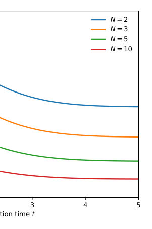
<figcaption class="paper-figure-caption"><b>Fig 1.</b> Figure 1: Time evolution of the reduced-system purity for equally weighted systems with N = 2, 3, 5, and 10 equally spaced energy levels. The parameters are fixed at g = 1, ∆= 1, and σ = 1. The purity starts from P(0) = 1 and approaches the asymptotic value P(∞) = 1/N.</figcaption>
</figure>
<figure class="paper-figure-card">

<figcaption class="paper-figure-caption"><b>Fig 2.</b> Figure 1 illustrates the dimensional dependence predicted by Eq. (29). Al- though all curves originate from the pure initial value P(0) = 1, their long-time limits depend explicitly on the number of populated energy levels. In particu- lar, increasing N lowers the asymptotic purity to 1/N, reflecting the increasing number of populated energy components whose associated pointer states become asymptotically distinguishable.</figcaption>
</figure>
<figure class="paper-figure-card">

<figcaption class="paper-figure-caption"><b>Fig 3.</b> Figure 2 confirms the spectral-gap dependence predicted analytically. Larger values of ∆produce more rapidly distinguishable conditional pointer states and</figcaption>
</figure>
<figure class="paper-figure-card">
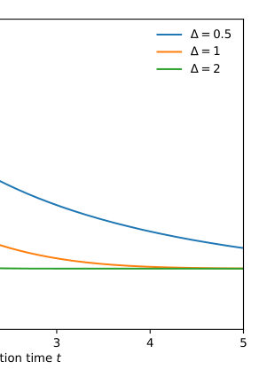
<figcaption class="paper-figure-caption"><b>Fig 4.</b> Figure 2: Dependence of the reduced-system purity on the fundamental spectral spacing ∆for an equally weighted five-level system with g = 1 and σ = 1. Increas- ing the spectral spacing accelerates the suppression of the off-diagonal coherences and leads to a faster approach toward the asymptotic purity P(∞) = 1/N.</figcaption>
</figure>
</div>

<p><strong>Summary.</strong> This theoretical paper analyzes how the purity of a quantum system decays when it interacts with a continuous-variable pointer observable. The decay dynamics are shown to be entirely dictated by the spectral structure of the system's Hamiltonian, leading to quantifiable bounds and characteristic timescales. It provides deep insights into how spectral gaps govern the rate of quantum information loss.</p>
<p><strong>Why it may be interesting.</strong> This work provides a rigorous, analytical framework for understanding decoherence mechanisms in quantum systems where the environment coupling is structured by the system's internal energy spectrum, which is highly relevant to quantum measurement theory and open quantum systems.</p>
<details>
<summary>Detailed structure</summary>
<p><strong>Main problem.</strong> The paper investigates the time evolution of purity in a quantum system coupled to a continuous-variable pointer via a von Neumann-type interaction.</p>
<p><strong>Main result.</strong> Purity loss is governed by the spectral separation of the system Hamiltonian, leading to state-dependent bounds and a characteristic timescale $t_\epsilon \propto \sigma/(|g|\Delta_{\min})$.</p>
<p><strong>Method.</strong> The authors derive an exact analytical expression for the time-dependent purity by tracing out the pointer degrees of freedom, utilizing properties of Gaussian states.</p>
<p><strong>Model / system.</strong> The model consists of a quantum system ($\hat{H}$) coupled to a continuous-variable pointer ($\hat{p}$) via the interaction $\hat{H}_{	ext{int}} = g \hat{H} \otimes \hat{p}$. The analysis is performed assuming the pointer starts in a Gaussian state.</p>
<p><strong>Key observables.</strong> Purity $P(t) = 	ext{Tr}[
ho_S(t)^2]$, short-time purity curvature $P''(0)$, and the asymptotic purity $P_\infty$.</p>
<p><strong>Important parameters / regimes.</strong> Coupling strength ($g$), pointer width ($\sigma$), minimum populated spectral gap ($\Delta_{\min}$), and the energy variance ($  ext{Var}_{\psi_S}(\hat{H})$).</p>
<p><strong>Assumptions / limitations.</strong> The pointer is assumed to be initially in a Gaussian pure state, and the interaction is strictly bilinear ($\hat{H}_{	ext{int}} = g \hat{H} \otimes \hat{p}$).</p>
<p><strong>Figures summary.</strong> Figures illustrate the time evolution of purity for equally spaced $N$-level systems, confirming $P(0)=1$ and $P(\infty)=1/N$, and show the dependence of purity decay on the spectral spacing $\Delta$.</p>
<p><strong>Paper structure.</strong> The paper develops the exact purity formula, derives state-dependent two-sided spectral-gap bounds, analyzes the short-time dynamics controlled by energy variance, and finally establishes the long-time approach timescale controlled by $\Delta_{\min}$.</p>
</details>
<details>
<summary>Abstract</summary>
<p>We investigate the purity dynamics of a quantum system coupled to a continuous-variable pointer through a von Neumann-type interaction Hamiltonian of the form $\hat H_{\mathrm{int}}=g\,\hat H\otimes\hat p$. For an initially Gaussian pointer state, the interaction generates energy-dependent conditional translations whose mutual overlaps are determined explicitly by the populated spectral separations of the system Hamiltonian. After tracing out the pointer degrees of freedom, we obtain the reduced density operator and derive an exact analytical expression for the time-dependent purity.   Using this expression, we establish two-sided purity bounds governed by the minimum and maximum nonzero energy gaps on the populated spectral support. These bounds provide a state-dependent spectral characterization of the loss of purity and become exact for two-level systems. We further show that the short-time decrease of purity is controlled by the Hamiltonian variance of the initial state, with $\mathcal P''(0)=-(g^2/σ^2) \operatorname{Var}_{ψ_S}(\hat H)$. In addition, an explicit sufficient timescale is derived for the purity to approach its asymptotic value within a prescribed tolerance, revealing the scaling $t_{\varepsilon}\proptoσ/(|g|Δ_{\min})$. Finally, the general results are illustrated for an equally weighted $N$-level system with an equally spaced spectrum, for which the asymptotic purity is $1/N$. The analysis clarifies the distinct roles of spectral separation, energy variance, coupling strength, and pointer width in Hamiltonian-conditioned purity loss.</p>
</details>
<p><sub><a href="#top">↑ back to top</a></sub></p>

<p><a id="paper-2609.18641"></a></p>
<h3 id="resonance-protected-pointer-states-stationary-phase-analysis-of-entanglement-in-an-environment-coupled-two-spin-system"><a href="http://arxiv.org/abs/2609.18641v1">Resonance-Protected Pointer States: Stationary-Phase Analysis of Entanglement in an Environment-Coupled Two-Spin System</a></h3>
<p><strong>Authors:</strong> Kentaro Urasaki<br>
<strong>Type:</strong> theory · <strong>Category:</strong> quantum information and computing · <strong>PDF:</strong> <a href="https://arxiv.org/pdf/2609.18641v1">https://arxiv.org/pdf/2609.18641v1</a><br>
<strong>Analysis basis:</strong> full PDF text, analyzed in chunks
<strong>Topic relevance:</strong> 🔥 <code>correlated / nonlocal dissipation</code> <strong>4/5</strong> · <code>Keldysh / 2PI / non-Gaussian methods</code> <strong>2/5</strong> · <code>methods for driven-dissipative</code> <strong>2/5</strong></p>
<div class="figure-strip-hint">↔ Scroll figures horizontally</div>
<div class="paper-figures-scroll">
<figure class="paper-figure-card">
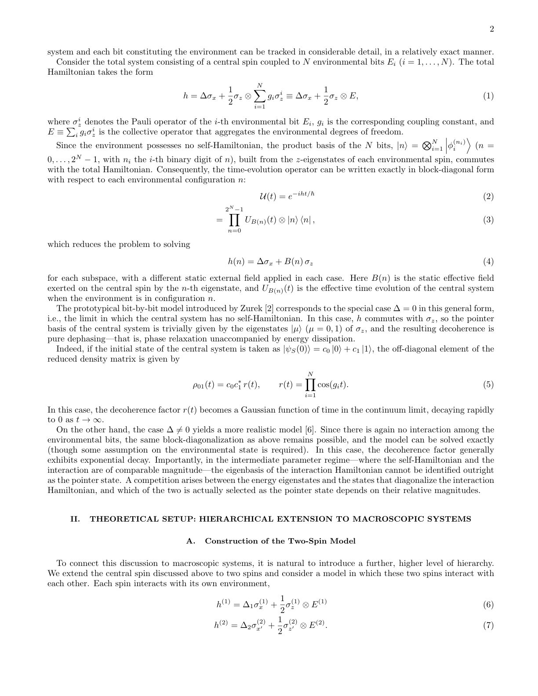
<figcaption class="paper-figure-caption"><b>Fig 1.</b> Low-resolution page preview, page 2</figcaption>
</figure>
<figure class="paper-figure-card">
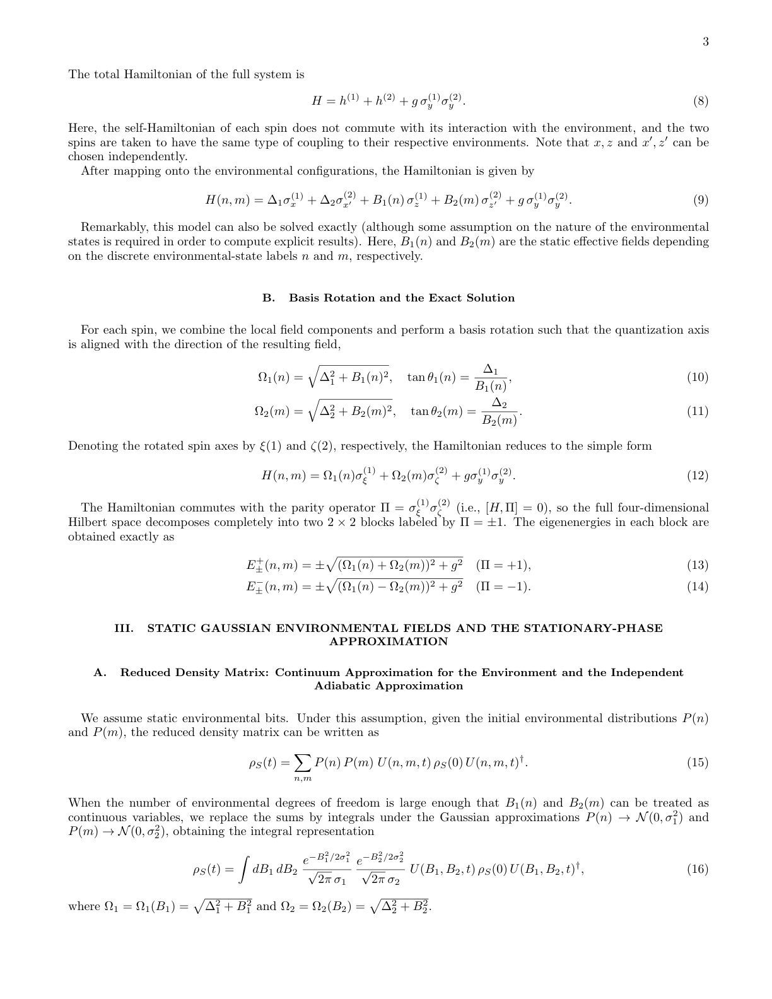
<figcaption class="paper-figure-caption"><b>Fig 2.</b> Low-resolution page preview, page 3</figcaption>
</figure>
<figure class="paper-figure-card">
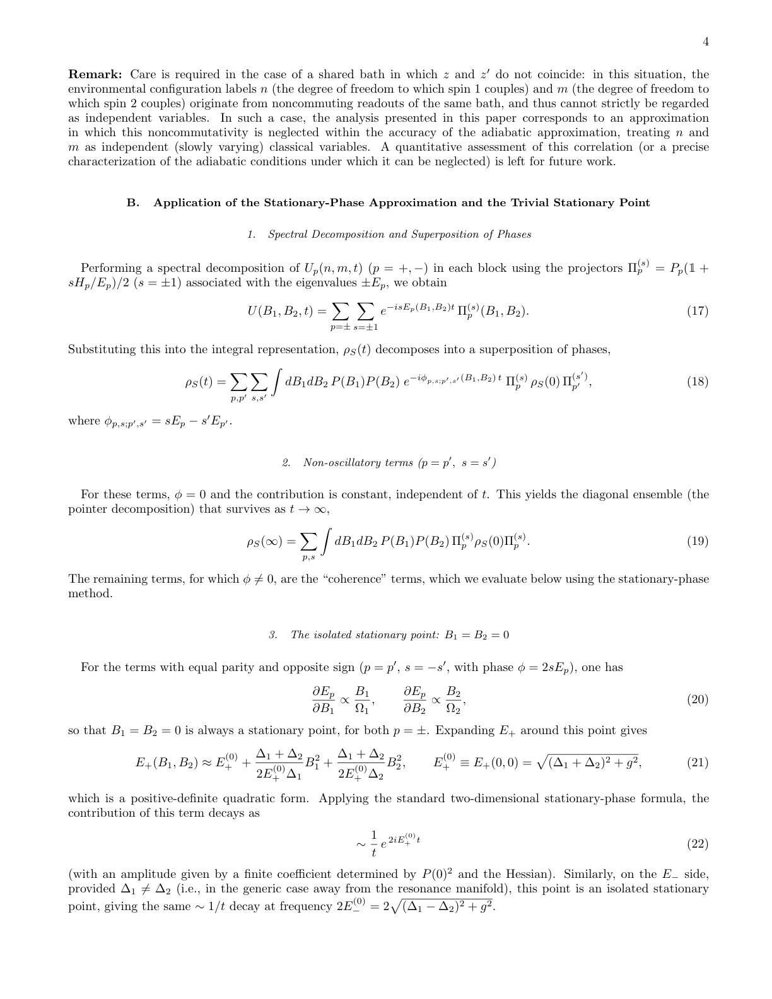
<figcaption class="paper-figure-caption"><b>Fig 3.</b> Low-resolution page preview, page 4</figcaption>
</figure>
<figure class="paper-figure-card">
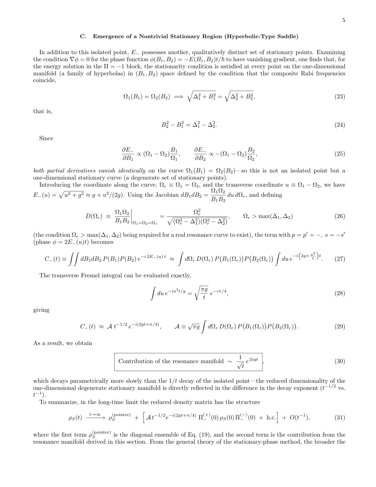
<figcaption class="paper-figure-caption"><b>Fig 4.</b> Low-resolution page preview, page 5</figcaption>
</figure>
<figure class="paper-figure-card">
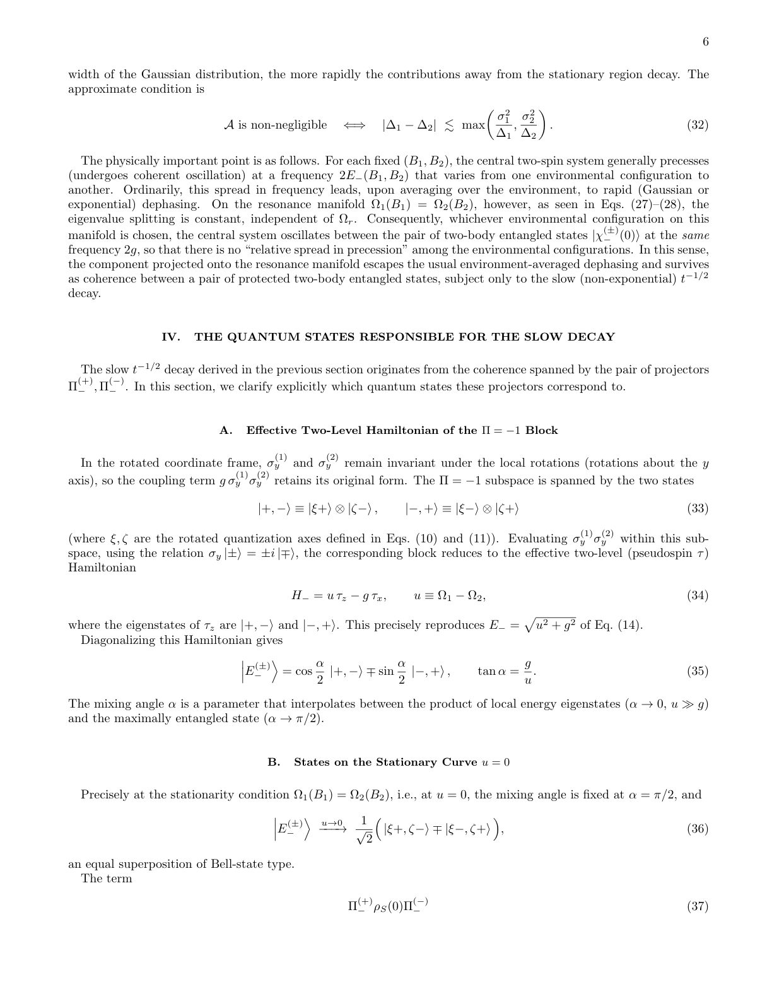
<figcaption class="paper-figure-caption"><b>Fig 5.</b> Low-resolution page preview, page 6</figcaption>
</figure>
</div>

<p><strong>Summary.</strong> This work investigates how entanglement survives decoherence in a two-spin system coupled to an environment. By using advanced mathematical techniques like the stationary-phase approximation, the authors show that coherence is protected when the local environmental fields satisfy a specific resonance condition. This protection leads to an anomalously slow $t^{-1/2}$ decay, revealing that the pointer state is governed by a collective environmental resonance rather than individual system couplings.</p>
<p><strong>Why it may be interesting.</strong> It provides a detailed, quantitative mechanism for environmental protection of entanglement, showing that the pointer basis selection can be dictated by a global, statistical resonance condition rather than local couplings.</p>
<details>
<summary>Detailed structure</summary>
<p><strong>Main problem.</strong> The paper analyzes quantum decoherence in a two-spin system coupled to an environment to determine the protected quantum states (pointer states) that survive environmental interaction.</p>
<p><strong>Main result.</strong> Under a specific resonance condition between the two environments, coherence between maximally entangled Bell-type states survives with an anomalously slow decay rate of $t^{-1/2}$, which is protected by a collective environmental resonance.</p>
<p><strong>Method.</strong> The analysis employs the Stationary-Phase Approximation (saddle-point method) on the integral representation of the reduced density matrix, comparing decay rates from isolated points versus resonance manifolds.</p>
<p><strong>Model / system.</strong> The system consists of two spin-1/2 particles coupled noncommutingly to two independent static environmental fields and mutually coupled via an interaction term ($\sigma_y^{(1)}\sigma_y^{(2)}$).</p>
<p><strong>Key observables.</strong> Coherence decay rates ($\sim t^{-1}$ vs. $\sim t^{-1/2}$), the reduced density matrix $
ho_S(t)$, and the pointer observable.</p>
<p><strong>Important parameters / regimes.</strong> The resonance condition ($\Omega_1(B_1) = \Omega_2(B_2)$), the inter-system coupling strength ($g$), and the time scale $t$.</p>
<p><strong>Assumptions / limitations.</strong> The analysis relies on the Stationary-Phase Approximation and treats the environmental couplings as independent variables in the continuum limit.</p>
<p><strong>Paper structure.</strong> The paper develops the Hamiltonian, constructs the reduced density matrix via an integral representation, applies the SPA to identify different stationary points (isolated vs. manifold), and compares the resulting coherence decay laws.</p>
</details>
<details>
<summary>Abstract</summary>
<p>In this manuscript, we analyze the dynamics of a model in which two spin-1/2 systems are each coupled noncommutingly to a static environmental field and to a self-Hamiltonian, while also being mutually coupled through a $σ_y^{(1)}σ_y^{(2)}$ interaction. By constructing an exact solution that exploits parity symmetry, and by applying the stationary-phase approximation (the saddle-point method) in the continuum limit of the environmental field, we show that coherence associated with the ordinary isolated stationary point decays as $t^{-1}$, whereas, under the resonance condition at which the local effective fields of the two spins cancel each other, only the coherence between a pair of maximally entangled, Bell-type states- the eigenbasis of the inter-system coupling-survives, decaying via the anomalously slow power law $t^{-1/2}$. Through a comparison with the pointer-basis theory of W. H. Zurek and coworkers (the 1981 and 2005 models), we further reveal a mechanism not reducible to local coupling: in this system, the pointer observable is determined not by the individual system-environment couplings but by a statistical resonance condition between the two environments.</p>
</details>
<p><sub><a href="#top">↑ back to top</a></sub></p>

<p><a id="paper-2609.18195"></a></p>
<h3 id="redesigning-the-linear-quadratic-gaussian-cost-function-for-feedback-cooling-of-a-quantum-harmonic-oscillator"><a href="http://arxiv.org/abs/2609.18195v1">Redesigning the linear--quadratic--Gaussian cost function for feedback cooling of a quantum harmonic oscillator</a></h3>
<p><strong>Authors:</strong> Shuma Sugiura, Koki Shiraishi, Masahito Ueda<br>
<strong>Type:</strong> theory · <strong>Category:</strong> other · <strong>PDF:</strong> <a href="https://arxiv.org/pdf/2609.18195v1">https://arxiv.org/pdf/2609.18195v1</a><br>
<strong>Analysis basis:</strong> full PDF text, analyzed in chunks
<strong>Topic relevance:</strong> 🔥 <code>quantum measurements</code> <strong>4/5</strong> · <code>correlated / nonlocal dissipation</code> <strong>1/5</strong> · <code>driven-dissipative phase transition</code> <strong>1/5</strong> · <code>methods for driven-dissipative</code> <strong>1/5</strong></p>
<div class="figure-strip-hint">↔ Scroll figures horizontally</div>
<div class="paper-figures-scroll">
<figure class="paper-figure-card">
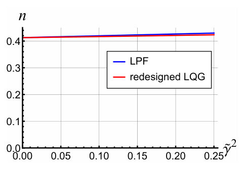
<figcaption class="paper-figure-caption"><b>Fig 1.</b> FIG. 1. Achievable phonon occupation number n as a func- tion of ˜γ2 at a detection efficiency of η = 0.3. The results are shown for both the LPF feedback (Eq. (36), blue curve) and the redesigned LQG control (Eq. (27), red curve). The two curves are nearly indistinguishable on this scale.</figcaption>
</figure>
<figure class="paper-figure-card">
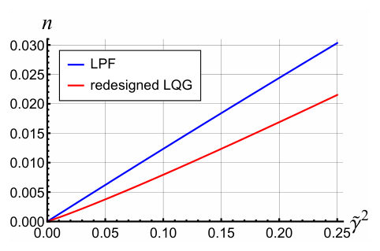
<figcaption class="paper-figure-caption"><b>Fig 2.</b> FIG. 2. Achievable phonon occupation number n as a func- tion of ˜γ2 at unit detection efficiency (η = 1), for the LPF feedback (Eq. (36), blue curve) and the redesigned LQG con- trol (Eq. (27), red curve). The difference between the two schemes is significant compared with that at η = 0.3 shown in Fig. 1.</figcaption>
</figure>
</div>

<p><strong>Summary.</strong> This paper improves the theoretical framework for quantum feedback cooling of a harmonic oscillator by redesigning the standard LQG cost function. By making the cost function sensitive to the feedback-induced potential shift, the authors derive a superior optimal control law. This redesigned control achieves better cooling performance, especially when measurement efficiencies are very high, confirming the physical necessity of matching the cost function to the true physical objective.</p>
<p><strong>Why it may be interesting.</strong> This work is highly relevant to AMO physics and quantum optics as it tackles optimal quantum control, specifically demonstrating how the precise physical objective (relative to the shifted potential) must dictate the mathematical cost function used in the control theory.</p>
<details>
<summary>Detailed structure</summary>
<p><strong>Main problem.</strong> The paper addresses the optimal control problem for feedback cooling of a quantum harmonic oscillator by redesigning the Linear-Quadratic-Gaussian (LQG) cost function.</p>
<p><strong>Main result.</strong> The redesigned LQG control achieves a lower steady-state phonon occupation number than conventional methods, providing a significant advantage as the measurement detection efficiency approaches unity.</p>
<p><strong>Method.</strong> The authors derive the optimal feedback law by formulating and minimizing a redesigned cost function that explicitly accounts for the feedback-induced shift of the potential, solving the resulting optimal control problem.</p>
<p><strong>Model / system.</strong> The system is a quantum harmonic oscillator, modeled by a Hamiltonian whose potential minimum is shifted by the feedback process. The dynamics are governed by a stochastic quantum master equation.</p>
<p><strong>Key observables.</strong> The achievable minimum steady-state phonon occupation number ($n$) is the primary diagnostic.</p>
<p><strong>Important parameters / regimes.</strong> Detection efficiency ($\eta$) is crucial, with the advantage of the new method becoming pronounced as $\eta 	o 1$.</p>
<p><strong>Assumptions / limitations.</strong> The analysis assumes the conditional state remains Gaussian, and the authors clarify that the redesigned and conventional cost functions represent distinct physical control objectives.</p>
<p><strong>Figures summary.</strong> Figure 1 compares phonon occupation number vs. measurement strength for low efficiency, showing near indistinguishability; Figure 2 compares the same for high efficiency ($\eta=1$), showing a clear advantage for the redesigned LQG control.</p>
<p><strong>Paper structure.</strong> The paper develops the problem by first considering the classical limit, then formulating the quantum optimal control problem using the redesigned cost function, deriving the optimal feedback law, and finally comparing the resulting cooling performance against established methods like LPF feedback.</p>
</details>
<details>
<summary>Abstract</summary>
<p>Linear--quadratic--Gaussian (LQG) control is optimal only with respect to a prescribed cost function, the choice of which dictates the physical objective of the control. We consider feedback cooling of a continuously monitored quantum harmonic oscillator by shifting the minimum of its trapping potential. In this setting, the physically relevant cooling objective can be defined as minimizing the oscillator's energy relative to the feedback-shifted potential. In contrast, conventional LQG control evaluates the energy from a fixed origin and thus fails to directly optimize this quantity. To address this problem, we introduce a redesigned cost function that explicitly accounts for the feedback-induced shift of the potential. We then derive the corresponding optimal feedback law and obtain an analytic expression for the minimum achievable steady-state phonon occupation number. The redesigned LQG control achieves a lower occupation number than low-pass-filter (LPF) feedback formulated for the same cooling objective. While this improvement is minor at detection efficiencies currently attainable in experiments---indicating that LPF feedback already delivers near-optimal cooling performance---the advantage becomes pronounced as the detection efficiency approaches unity. In this regime, the redesigned LQG control provides an increasing advantage for reaching the motional ground state at a finite measurement strength. We clarify that the conventional and redesigned cost functions represent distinct control objectives rather than different implementations of the same optimization problem.</p>
</details>
<p><sub><a href="#top">↑ back to top</a></sub></p>

<p><a id="paper-2609.18735"></a></p>
<h3 id="all-coherent-measurements-provide-observational-ergotropic-advantage"><a href="http://arxiv.org/abs/2609.18735v1">All coherent measurements provide observational ergotropic advantage</a></h3>
<p><strong>Authors:</strong> Soumik Mahanti, Rakesh Saini, Alexei Gilchrist, Arindam Mitra<br>
<strong>Type:</strong> theory · <strong>Category:</strong> statistical mechanics · <strong>PDF:</strong> <a href="https://arxiv.org/pdf/2609.18735v1">https://arxiv.org/pdf/2609.18735v1</a><br>
<strong>Analysis basis:</strong> full PDF text, analyzed in chunks
<strong>Topic relevance:</strong> 🔥 <code>quantum measurements</code> <strong>4/5</strong> · <code>correlated / nonlocal dissipation</code> <strong>1/5</strong></p>
<div class="figure-strip-hint">↔ Scroll figures horizontally</div>
<div class="paper-figures-scroll">
<figure class="paper-figure-card">
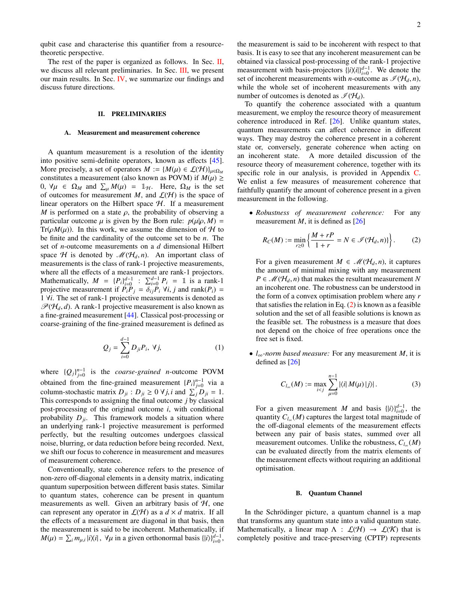
<figcaption class="paper-figure-caption"><b>Fig 1.</b> Low-resolution page preview, page 2</figcaption>
</figure>
<figure class="paper-figure-card">
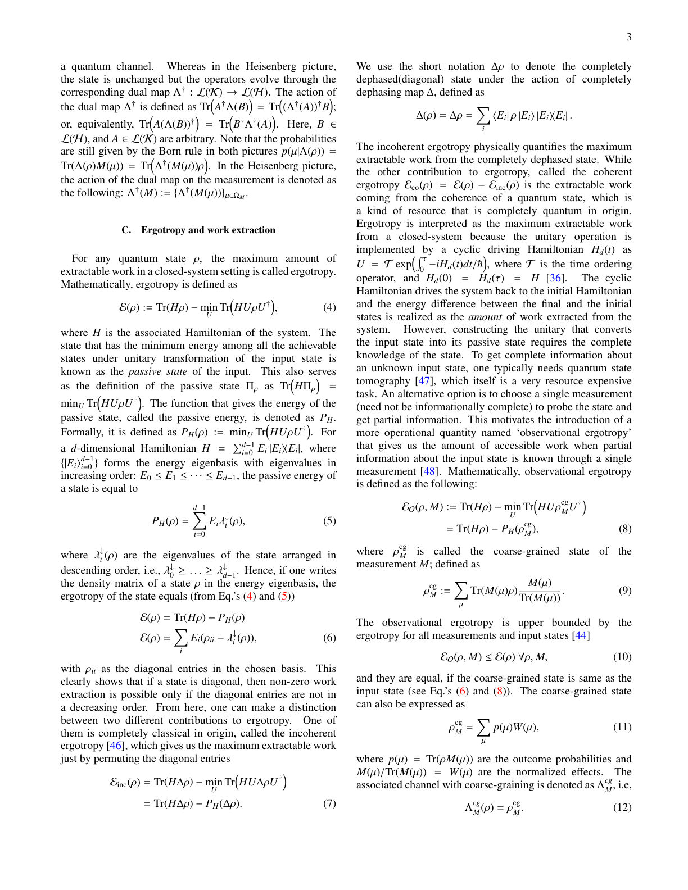
<figcaption class="paper-figure-caption"><b>Fig 2.</b> Low-resolution page preview, page 3</figcaption>
</figure>
<figure class="paper-figure-card">
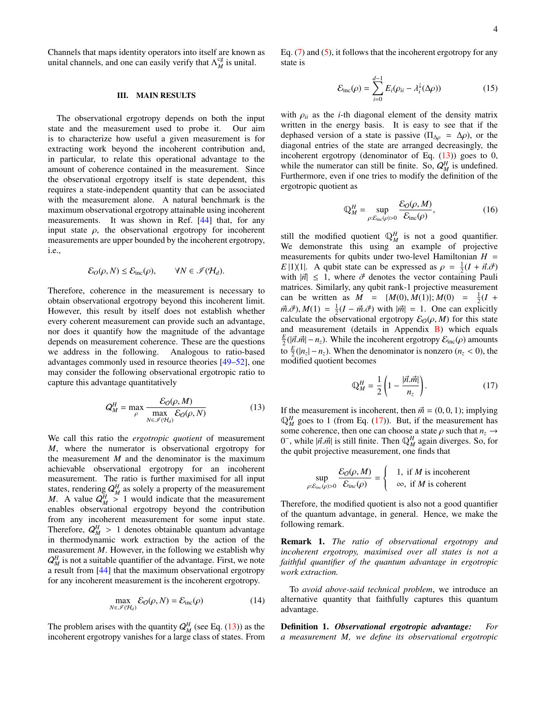
<figcaption class="paper-figure-caption"><b>Fig 3.</b> Low-resolution page preview, page 4</figcaption>
</figure>
<figure class="paper-figure-card">
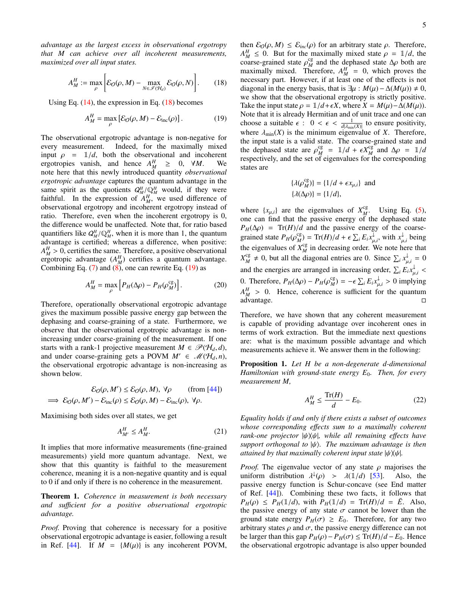
<figcaption class="paper-figure-caption"><b>Fig 4.</b> Low-resolution page preview, page 5</figcaption>
</figure>
<figure class="paper-figure-card">
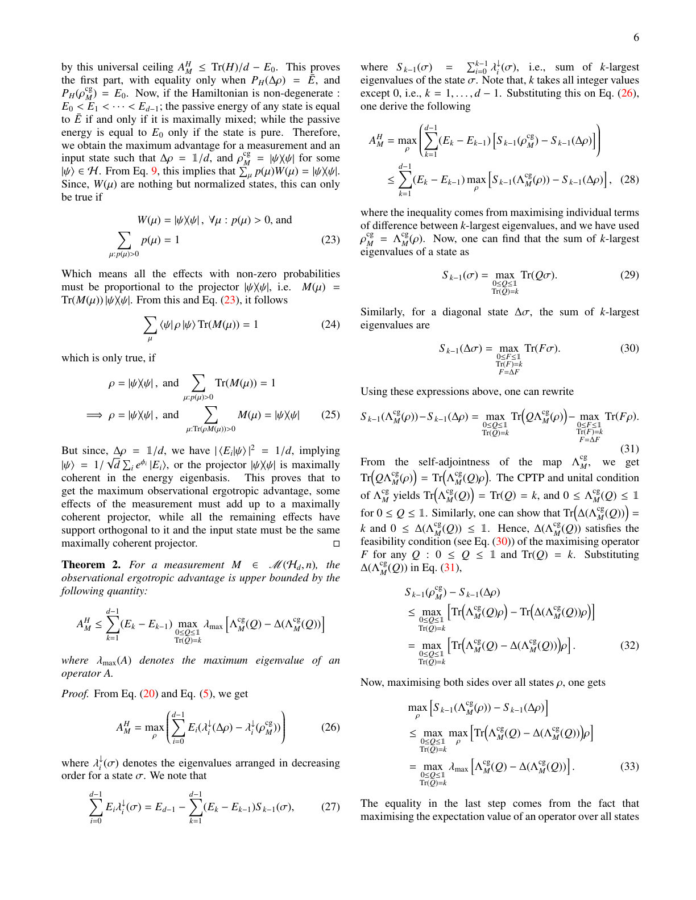
<figcaption class="paper-figure-caption"><b>Fig 5.</b> Low-resolution page preview, page 6</figcaption>
</figure>
</div>

<p><strong>Summary.</strong> This paper quantifies the 'observational ergotropic advantage'—the extra work extractable due to measurement coherence—by introducing a novel operational quantifier. It proves that this advantage is directly linked to measurement coherence and demonstrates that this resource is not preserved under all physically allowed operations, which has implications for quantum resource theory.</p>
<p><strong>Why it may be interesting.</strong> This work directly connects fundamental concepts from quantum thermodynamics (work extraction, ergotropy) with the resource theory of quantum measurements, providing rigorous, quantitative tools for assessing quantum advantages in energy harvesting.</p>
<details>
<summary>Detailed structure</summary>
<p><strong>Main problem.</strong> The paper aims to establish a quantitative, operational measure for the advantage gained in work extraction from a quantum system when only partial state knowledge is available via measurement, and to characterize this advantage using measurement coherence.</p>
<p><strong>Main result.</strong> The authors derive a faithful operational quantifier for the work advantage, showing that measurement coherence is necessary and sufficient for a positive advantage. Crucially, they demonstrate that this advantage is not monotonic under physically incoherent operations.</p>
<p><strong>Method.</strong> The work involves defining and maximizing the 'observational ergotropic advantage' ($A_H^M$) by comparing the passive energy gap before and after coarse-graining the state based on the measurement outcome. The analysis is extended to test monotonicity using specific quantum channels.</p>
<p><strong>Model / system.</strong> The study considers general quantum systems, using qubits and qutrits as explicit examples. The physics revolves around work extraction, ergotropy, and the resource quantification of measurement coherence within the framework of quantum thermodynamics.</p>
<p><strong>Key observables.</strong> Observational Ergotropic Advantage ($A_H^M$), Robustness of measurement coherence ($RC(M)$), and $l_{\infty}$-norm based coherence measure ($Cl_{\infty}(M)$).</p>
<p><strong>Important parameters / regimes.</strong> The dimension of the Hilbert space ($d$), the Hamiltonian ($H$), and the specific structure of the measurement POVMs $\{M(\mu)\}$.</p>
<p><strong>Assumptions / limitations.</strong> The analysis builds upon the definition of ergotropy and assumes the existence of free operations (like PIOs) to test resource monotonicity.</p>
<p><strong>Figures summary.</strong> The notes do not provide a summary of figures, but the analysis involves deriving specific mathematical expressions for the advantage under different conditions.</p>
<p><strong>Paper structure.</strong> The paper progresses from establishing the need for a quantitative measure (Chunk 1), developing the operational advantage quantifier $A_H^M$ (Chunk 2), exploring resource theory bounds (Chunk 3), and finally testing the monotonicity of this advantage under physical constraints (Chunk 4).</p>
</details>
<details>
<summary>Abstract</summary>
<p>The use of quantum resources in the work extraction from a quantum system is an emerging research topic. Recently, [arXiv:2602.22893] established the necessity of measurement coherence for obtaining advantage in work extraction from an unknown isolated quantum system. However, a quantitative relation between the magnitude of this advantage and established measures of measurement coherence is missing. Here, we establish such a connection by introducing a faithful operational quantifier of the work advantage provided by a measurement. We show that measurement coherence is necessary and sufficient for a positive advantage, and derive upper and lower bounds in terms of the robustness of measurement coherence and an $l_{\infty}$ norm based coherence measure respectively. Finally, we examine this quantifier of advantage from the resource theoretic perspective. Our results provide an operational characterisation of measurement coherence as a resource for work extraction and reveal a nontrivial relation between its resource content and thermodynamic value.</p>
</details>
<p><sub><a href="#top">↑ back to top</a></sub></p>

<p><a id="paper-2609.17900"></a></p>
<h3 id="a-semiconductor-photon-pair-source-based-on-a-polariton-cascade"><a href="http://arxiv.org/abs/2609.17900v1">A semiconductor photon-pair source based on a polariton cascade</a></h3>
<p><strong>Authors:</strong> Karol Kawa<br>
<strong>Type:</strong> theory · <strong>Category:</strong> other · <strong>PDF:</strong> <a href="https://arxiv.org/pdf/2609.17900v1">https://arxiv.org/pdf/2609.17900v1</a><br>
<strong>Analysis basis:</strong> full PDF text, analyzed in chunks
<strong>Topic relevance:</strong> <code>Full counting statistics</code> <strong>3/5</strong> · <code>Tavis-Cummings &amp; cavity-many-emitter</code> <strong>3/5</strong> · <code>analog quantum simulation</code> <strong>3/5</strong> · <code>correlated / nonlocal dissipation</code> <strong>3/5</strong> · <code>methods for driven-dissipative</code> <strong>3/5</strong> · <code>Keldysh / 2PI / non-Gaussian methods</code> <strong>2/5</strong> · <code>driven-dissipative phase transition</code> <strong>2/5</strong> · <code>quantum measurements</code> <strong>2/5</strong> · <code>Dicke superradiance</code> <strong>1/5</strong> · <code>interference shaping light</code> <strong>1/5</strong> · <code>non-equilibrium universality</code> <strong>1/5</strong> · <code>superradiant laser</code> <strong>1/5</strong></p>
<div class="figure-strip-hint">↔ Scroll figures horizontally</div>
<div class="paper-figures-scroll">
<figure class="paper-figure-card">
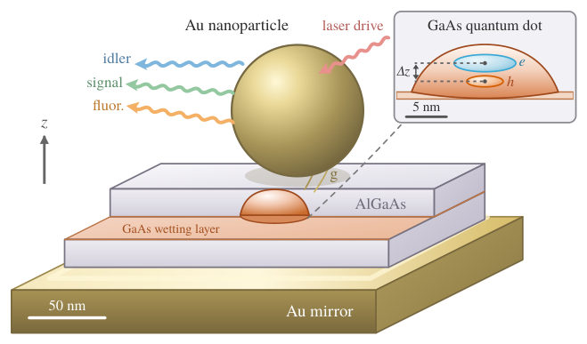
<figcaption class="paper-figure-caption"><b>Fig 1.</b> FIG. 1. Hypothetical device geometry. A GaAs quantum dot lies in AlGaAs between a gold nanoparticle and a gold mirror, above a GaAs wetting layer. The solid AlGaAs block represents a bulk matrix. The gap axis 𝑧marks the growth direction and mode polarization, and 𝑔labels the exciton-mode coupling. The red arrow marks the laser drive, and the blue, green and orange arrows mark idler, signal and fluorescence emission. The inset shows electron and hole density contours at 1/e of their maxima, separated by Δ𝑧. The scale bars apply to the main drawing and inset, while the carrier ordering, mirror thickness and separation are schematic.</figcaption>
</figure>
<figure class="paper-figure-card">
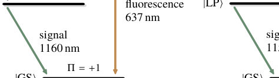
<figcaption class="paper-figure-caption"><b>Fig 2.</b> FIG. 2. Radiative transitions between the three retained eigenstates of Eq. (2). The labels give representative vacuum wavelengths for the chosen model parameters ℏ𝜔𝑚= 1.40 eV, ℏ𝜔𝑒= 1.62 eV and 𝜂= 2𝑔/(𝜔𝑚+ 𝜔𝑒) = 0.275. (a) At 𝑑𝑝= 0, the crossed grey line marks the forbidden idler transition, and the labels give the state parities. (b) At 𝑑𝑝/𝑔= 0.720, the blue arrow marks the allowed idler transition. Green and orange arrows mark signal and fluorescence emission in both panels. The levels are drawn relative to GS, using the same energy scale in both panels.</figcaption>
</figure>
<figure class="paper-figure-card">
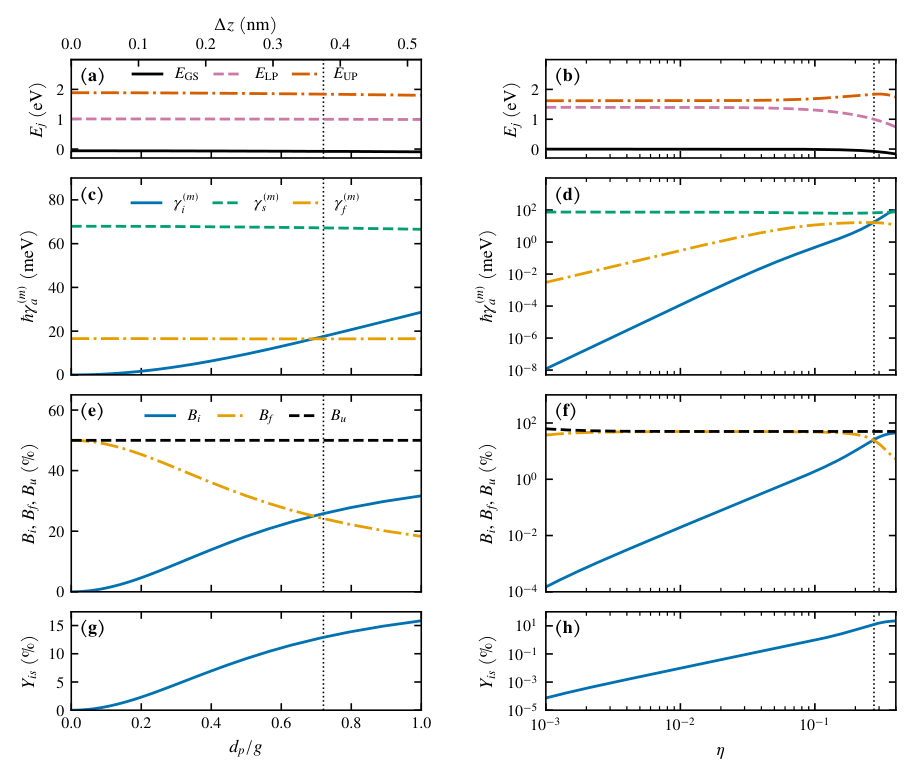
<figcaption class="paper-figure-caption"><b>Fig 3.</b> FIG. 3. (a),(b) Undriven eigenenergies 𝐸𝑗of GS, LP and UP, with the fixed energy zero of Hamiltonian (2). (c),(d) Localized-mode loss linewidths ℏ𝛾(𝑚) 𝑎 [Eq. (24)] for the idler (𝑎= 𝑖, solid blue), signal (𝑎= 𝑠, dashed green) and fluorescence (𝑎= 𝑓, dash-dotted orange). (e),(f) Antenna-output idler and fluorescence branching fractions 𝐵𝑖and 𝐵𝑓, and unobserved upper-polariton decay probability 𝐵𝑢[Eq. (31)]. (g),(h) Two-photon antenna yield 𝑌𝑖𝑠[Eq. (32)] per prepared UP, with the laser off. The left column varies permanent-dipole asymmetry 𝑑𝑝/𝑔at the reference relative coupling 𝜂= 0.275. The top axis gives electron–hole separation Δ𝑧for the fixed transition dipole 𝜇𝑒𝑔= 25 D [Eq. (4)]. The...</figcaption>
</figure>
<figure class="paper-figure-card">
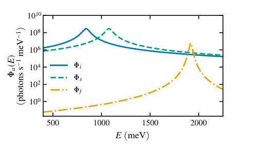
<figcaption class="paper-figure-caption"><b>Fig 4.</b> FIG. 4. Incoherent antenna emission flux Φ𝑎(𝐸) [Eq. (52)] against photon energy 𝐸, under the reference continuous drive and with the reference rates. The blue solid, green dashed and orange dash-dotted curves are idler, signal and fluorescence emission, respectively. The elastic pump contribution is omitted.</figcaption>
</figure>
<figure class="paper-figure-card">
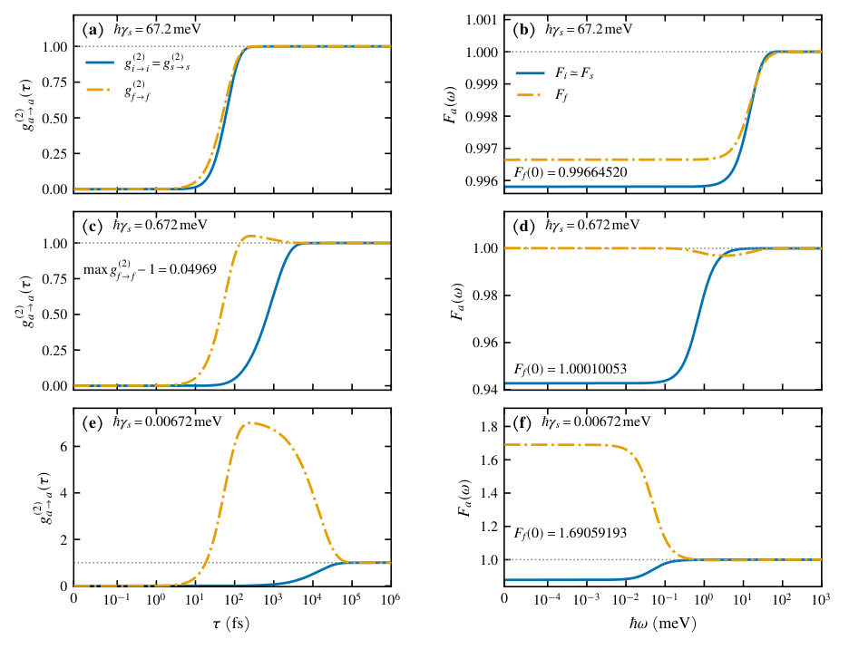
<figcaption class="paper-figure-caption"><b>Fig 5.</b> FIG. 5. Individual-channel statistics at drive ℏΩR = 1.6473 meV and displacement 0.375 nm. The rows use total signal decay rates ℏ𝛾𝑠= 67.229 meV, 0.6723 meV and 0.006723 meV. The idler and fluorescence rates retain the reference values given in Sec. IV A. The signal- rate choices compare different assumed reservoir weights at the signal energy, with the Hamiltonian and counted fractions fixed. (a),(c),(e) Normalized autocorrelations 𝑔(2) 𝑎→𝑎(𝜏) [Eq. (36)] versus intrinsic time delay 𝜏. (b),(d),(f) Single-channel Fano spectra 𝐹𝑎(𝜔) [Eq. (47)] versus ℏ𝜔, where 𝜔is the angular frequency of photon-count fluctuations. Both horizontal axes are linear from zero to the first positive tick and...</figcaption>
</figure>
</div>

<p><strong>Summary.</strong> This theoretical study models a photon-pair source using a semiconductor quantum dot coupled to a plasmonic cavity. The key finding is that a permanent dipole moment, arising from structural asymmetry, is necessary to break a symmetry that otherwise forbids the required radiative transition. The paper calculates the resulting photon correlations, providing a theoretical blueprint for such a quantum light source.</p>
<p><strong>Why it may be interesting.</strong> This work directly addresses quantum light sources by modeling strong light-matter coupling in solid-state systems, which is a core topic in cavity QED and open quantum systems.</p>
<details>
<summary>Detailed structure</summary>
<p><strong>Main problem.</strong> The study aims to theoretically model a semiconductor photon-pair source based on a radiative cascade mechanism.</p>
<p><strong>Main result.</strong> The presence of a permanent exciton dipole, which breaks a key symmetry, is shown to be necessary to enable the radiative transition between the upper and lower polariton states, thus establishing an operating principle for the source.</p>
<p><strong>Method.</strong> The analysis uses an effective quantum model and photon-counting theory to calculate emission probabilities and analyze photon correlations.</p>
<p><strong>Model / system.</strong> The system involves a GaAs quantum dot coupled to a localized electromagnetic mode (plasmon) between a metal nanoparticle and a mirror. The dynamics are governed by a Hamiltonian incorporating exciton and plasmon interactions, crucially including a permanent dipole term.</p>
<p><strong>Key observables.</strong> Idler photon emission rate, signal photon emission rate, photon count fluctuations, and correlations between the two emission channels.</p>
<p><strong>Important parameters / regimes.</strong> Coupling strengths ($g, d_p$), cavity/plasmon frequencies ($\omega_m$), and the permanent dipole strength ($\Delta\mu$).</p>
<p><strong>Assumptions / limitations.</strong> The calculations rely on an effective model, assume specific emitter properties and optical loss rates, and the final feasibility remains open to experimental realization.</p>
<p><strong>Figures summary.</strong> Figure 1 illustrates the hypothetical device geometry (GaAs QD between Au nanoparticle and mirror). Figure 2 compares the forbidden vs. allowed idler transition rates based on the dipole moment.</p>
<p><strong>Paper structure.</strong> The paper first establishes the physical system and the role of the permanent dipole in breaking symmetry. It then uses an effective model to calculate the probability of the two-step cascade (Upper $
ightarrow$ Lower $
ightarrow$ Ground), analyzing correlations and fluctuations.</p>
</details>
<details>
<summary>Abstract</summary>
<p>We present a theoretical study of a semiconductor photon-pair source based on a radiative cascade enabled by a permanent exciton dipole. The source consists of a GaAs quantum dot placed between a metal nanoparticle and a mirror. The dot exciton and the localized electromagnetic mode mix to form upper and lower polaritons. Without a permanent dipole, a symmetry separating states with even and odd excitation numbers forbids photon emission between the polaritons. Separation of the mean electron and hole positions gives the exciton a permanent dipole and breaks this symmetry. The upper polariton can then emit an idler photon as it decays to the lower polariton. The lower polariton can emit a signal photon as the system returns to its ground state. Using an effective model, we calculate the probability that a prepared upper polariton emits both photons through the metal antenna. We also analyse fluctuations in the emitted photon counts and correlations between the two emission channels. The calculation establishes an operating principle for assumed emitter properties and optical loss rates. Whether the device can be built and its photon correlations measured remains open.</p>
</details>
<p><sub><a href="#top">↑ back to top</a></sub></p>

<p><a id="paper-2609.18012"></a></p>
<h3 id="sublattice-selective-control-of-spin-reversal-in-metasurface-coupled-kagome-interfaces"><a href="http://arxiv.org/abs/2609.18012v1">Sublattice-selective control of spin reversal in metasurface-coupled Kagome interfaces</a></h3>
<p><strong>Authors:</strong> Ximo Wang, Qiwei Han, Zhenqi Bai, Ruyue Guo, Min Feng, Yichi Zhang<br>
<strong>Type:</strong> theory · <strong>Category:</strong> other · <strong>PDF:</strong> <a href="https://arxiv.org/pdf/2609.18012v1">https://arxiv.org/pdf/2609.18012v1</a><br>
<strong>Analysis basis:</strong> full PDF text, analyzed in chunks
<strong>Topic relevance:</strong> <code>analog quantum simulation</code> <strong>3/5</strong> · <code>correlated / nonlocal dissipation</code> <strong>3/5</strong> · <code>driven-dissipative phase transition</code> <strong>3/5</strong> · <code>interference shaping light</code> <strong>3/5</strong> · <code>methods for driven-dissipative</code> <strong>3/5</strong> · <code>quantum measurements</code> <strong>2/5</strong> · <code>Keldysh / 2PI / non-Gaussian methods</code> <strong>1/5</strong> · <code>non-equilibrium universality</code> <strong>1/5</strong></p>
<div class="figure-strip-hint">↔ Scroll figures horizontally</div>
<div class="paper-figures-scroll">
<figure class="paper-figure-card">
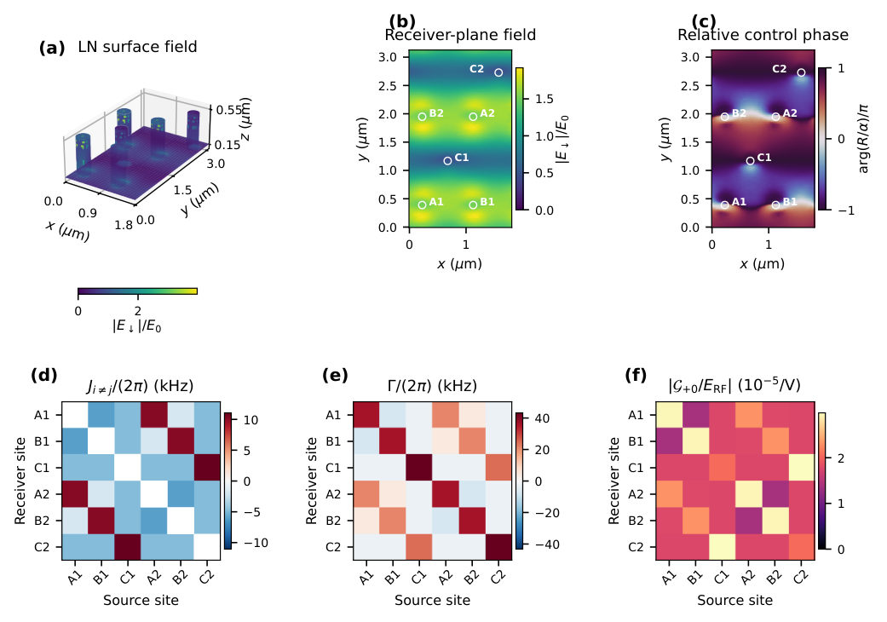
<figcaption class="paper-figure-caption"><b>Fig 1.</b> FIG. 1. Exploratory COMSOL supercell and extracted response. (a) Three-dimensional electric-field magnitude on the LN film and six pillar surfaces, evaluated just inside the dielectric. (b) Field magnitude and (c) Raman-product phase at the receiver plane, 100 nm above the pillars. White circles locate the six finite-volume receivers. Phase is relative to the fitted common complex scale α; ±1 denotes a π offset. Fields use the optimized down-control solution with E0 = 1 V/m and 40-layer PMLs. (d) Regularized coherent exchange and (e) collective decay, from the full matrix-adjoint decomposition; the real diagonal exchange shift is omitted from the plot. Exchange and decay use an illustrative...</figcaption>
</figure>
<figure class="paper-figure-card">
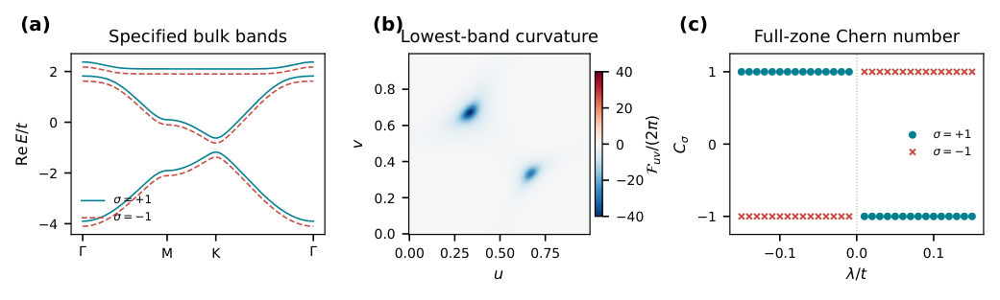
<figcaption class="paper-figure-caption"><b>Fig 2.</b> FIG. 2. Effective-model bulk verification. (a) Real bands for λ/t = 0.08, ∆/t = 0.20; common loss gives Im E/t = −0.06 for every band. (b) Lowest-band Berry-curvature density on a 151 × 151 periodic-gauge grid, k = ub1 + vb2, for spin +. (c) Full-zone lower-band Chern numbers for 30 nonzero signed couplings. No individual-band invariant is assigned at λ = 0. These are lattice-model calculations, independent of the FEM supercell.</figcaption>
</figure>
<figure class="paper-figure-card">
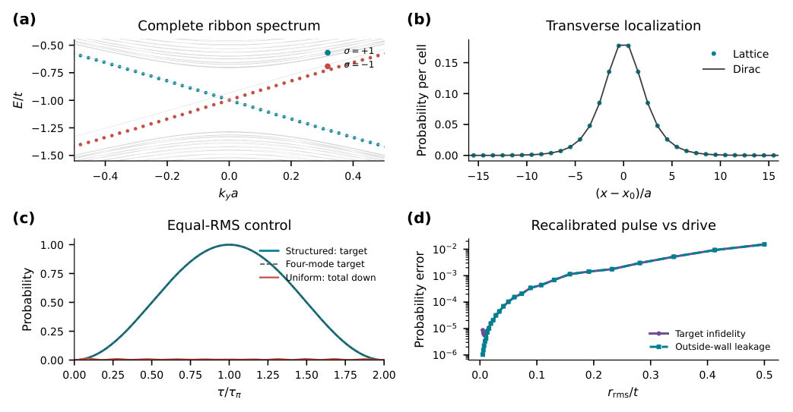
<figcaption class="paper-figure-caption"><b>Fig 3.</b> FIG. 3. Complete transverse-lattice tests at λ0/t = 0.08, w/a = 2, Nx = 60. (a) Ribbon spectrum; colored points have more than 80% central probability, while gray curves include bulk and outer-boundary states. (b) Pair-averaged cell probability and normalized Dirac prediction. (c) Structured-drive target probability, four-mode prediction and uniform-drive total down-spin population at equal RMS 0.04t. (d) Target infidelity and outside-wall leakage versus drive, with the projected pulse recalibrated at every point. These are conserved-momentum sectors, not a localized two-dimensional wavepacket.</figcaption>
</figure>
<figure class="paper-figure-card">
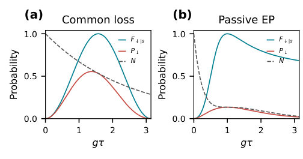
<figcaption class="paper-figure-caption"><b>Fig 4.</b> FIG. 4. Trace-preserving three-state dynamics: conditional conversion F↓|s, unconditional down-state probability P↓and survival N. (a) γ = 0, κ0/g = 0.4, δ = 0; at gτ = π/2, P↓= 0.533488. (b) Passive EP, γ/g = −1, κ0/g = 2; complete conditional conversion at gτ = 1 has success e−2 = 0.135335.</figcaption>
</figure>
</div>

<p><strong>Summary.</strong> This research develops a method for precisely controlling spin reversal in photonic interface states within a Kagome lattice structure. By analyzing the coupling mechanisms, the authors determined that a specific sublattice pattern ($1:1:-2$) is required to overcome inherent symmetries that cause coupling cancellation. The findings provide quantitative electromagnetic design targets for realizing such spin-dependent quantum control in metasurface-coupled systems.</p>
<p><strong>Why it may be interesting.</strong> This work is highly relevant as it merges concepts from topological photonics, open quantum systems (Lindblad dynamics), and structured light-matter interaction, providing concrete, quantifiable design rules for controlling quantum states in engineered photonic environments.</p>
<details>
<summary>Detailed structure</summary>
<p><strong>Main problem.</strong> The paper addresses the challenge of achieving sublattice-selective control for spin reversal in photonic interface states, overcoming limitations where uniform control fields fail to couple opposite-spin, same-valley modes.</p>
<p><strong>Main result.</strong> An optimal sublattice pattern, specifically $1:1:-2$, was identified to maximize the projected coupling, achieving a high target-mode fidelity of $0.999937$ in full-zone topology calculations.</p>
<p><strong>Method.</strong> The study combines theoretical analysis of lattice Hamiltonians with numerical simulations, including full-zone topology calculations and an exploratory 3D supercell model.</p>
<p><strong>Model / system.</strong> The system is a two-component Kagome lattice motivated by photon-mediated exchange near a nonlinear nonlocal metasurface. The dynamics are governed by an effective Hamiltonian and analyzed using projected Rabi amplitudes.</p>
<p><strong>Key observables.</strong> Target-mode fidelity, leakage probability, projected Rabi amplitude ($\Omega_e$), and spin populations.</p>
<p><strong>Important parameters / regimes.</strong> RMS drive amplitude ($0.04t$), sublattice pattern coefficients ($1, 1, -2$), and the lattice hopping terms ($t$).</p>
<p><strong>Assumptions / limitations.</strong> The derived control principle provides quantitative electromagnetic design targets, but the full spin-dependent device realization requires further calibration and assumptions about material constants are made in the EM tests.</p>
<p><strong>Figures summary.</strong> Figures illustrate the electric field magnitude, Raman-product phase, coherent exchange, and decay across the lattice structure in an exploratory COMSOL supercell.</p>
<p><strong>Paper structure.</strong> The paper progresses from identifying the fundamental coupling limitations of uniform control to deriving the optimal sublattice pattern ($1:1:-2$), validating this pattern through full-zone topology calculations, and finally demonstrating the principle using an exploratory 3D supercell simulation.</p>
</details>
<details>
<summary>Abstract</summary>
<p>Coherent manipulation of photonic interface states requires a control field that matches their internal mode structure. We study this requirement in a two-component Kagome lattice motivated by photon-mediated exchange near a nonlinear nonlocal metasurface. The Dirac spinors show why uniform Raman control cannot couple opposite-spin, same-valley interface modes at leading order, even when their spatial envelopes coincide. A $1:1:-2$ sublattice pattern removes this cancellation and maximizes the projected coupling at fixed root-mean-square amplitude within the diagonal-control class. We test this control scheme through full-zone topology and complete lattice propagation. For a smooth, gapped interface, a $720$-dimensional calculation gives target-mode fidelity $0.999937$ with leakage $6.27\times10^{-5}$ at RMS drive $0.04t$. Trace-preserving dynamics gives the separate survival condition needed for successful conversion. An exploratory three-dimensional lithium-niobate supercell reproduces the complex addressing pattern with $0.373\%$ relative error and provides nonlocal exchange, decay and electro-optic frequency-conversion matrices. The mode-resolved control principle thus gives quantitative electromagnetic design targets; the full spin-dependent device realization still requires further calibration.</p>
</details>
<p><sub><a href="#top">↑ back to top</a></sub></p>

<p><a id="paper-2609.18593"></a></p>
<h3 id="from-reversible-quantum-dynamics-to-statistical-probability-a-dynamical-solution-to-the-origin-of-probability-and-hilberts-sixth-problem"><a href="http://arxiv.org/abs/2609.18593v1">From Reversible Quantum Dynamics to Statistical Probability: A dynamical solution to the origin of probability and Hilbert's sixth problem</a></h3>
<p><strong>Authors:</strong> Wei-Min Zhang<br>
<strong>Type:</strong> theory · <strong>Category:</strong> statistical mechanics · <strong>PDF:</strong> <a href="https://arxiv.org/pdf/2609.18593v1">https://arxiv.org/pdf/2609.18593v1</a><br>
<strong>Analysis basis:</strong> full PDF text, analyzed in chunks
<strong>Topic relevance:</strong> <code>Keldysh / 2PI / non-Gaussian methods</code> <strong>3/5</strong> · <code>driven-dissipative phase transition</code> <strong>3/5</strong> · <code>methods for driven-dissipative</code> <strong>3/5</strong> · <code>non-equilibrium universality</code> <strong>3/5</strong> · <code>correlated / nonlocal dissipation</code> <strong>2/5</strong> · <code>scars &amp; prethermalization</code> <strong>2/5</strong> · <code>quantum measurements</code> <strong>1/5</strong></p>
<div class="figure-strip-hint">↔ Scroll figures horizontally</div>
<div class="paper-figures-scroll">
<figure class="paper-figure-card">
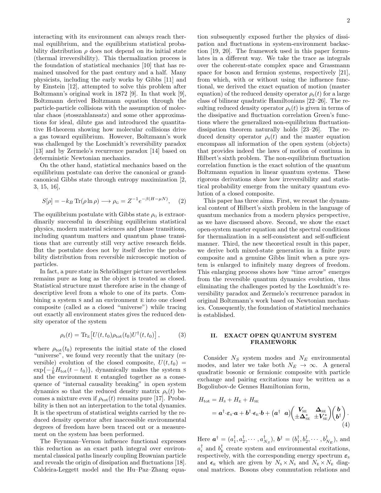
<figcaption class="paper-figure-caption"><b>Fig 1.</b> Low-resolution page preview, page 2</figcaption>
</figure>
<figure class="paper-figure-card">
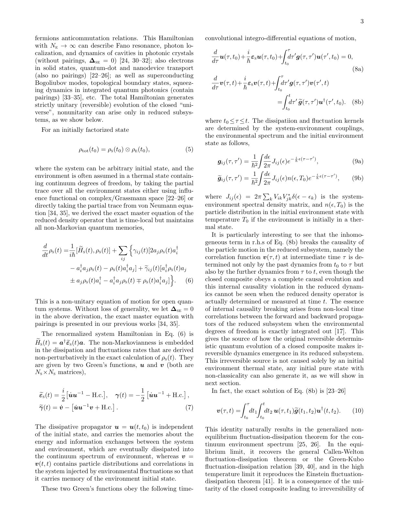
<figcaption class="paper-figure-caption"><b>Fig 2.</b> Low-resolution page preview, page 3</figcaption>
</figure>
<figure class="paper-figure-card">
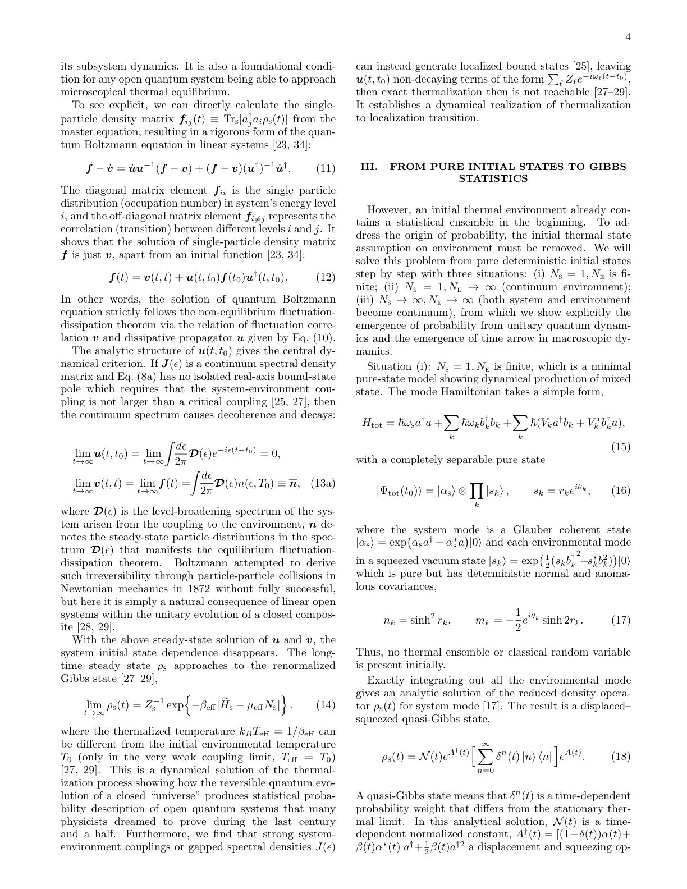
<figcaption class="paper-figure-caption"><b>Fig 3.</b> Low-resolution page preview, page 4</figcaption>
</figure>
<figure class="paper-figure-card">
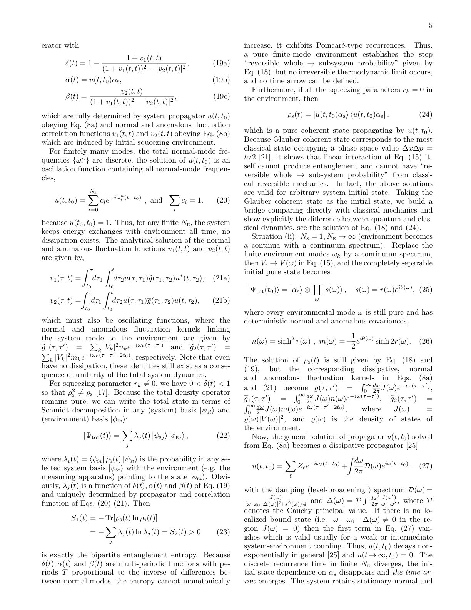
<figcaption class="paper-figure-caption"><b>Fig 4.</b> Low-resolution page preview, page 5</figcaption>
</figure>
<figure class="paper-figure-card">
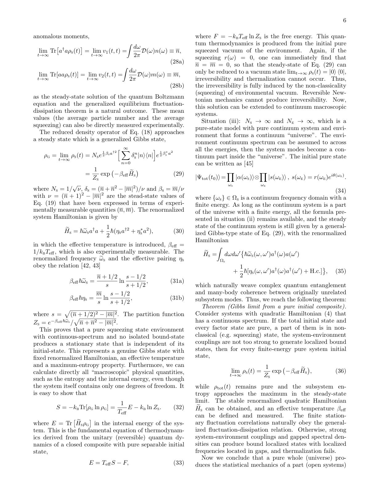
<figcaption class="paper-figure-caption"><b>Fig 5.</b> Low-resolution page preview, page 6</figcaption>
</figure>
</div>

<p><strong>Summary.</strong> This paper solves Hilbert's sixth problem by showing that statistical probability is not an added postulate but an emergent property. It derives the reduced dynamics for open quantum systems using exact methods, demonstrating that irreversible thermalization occurs naturally when the environment spectrum is continuous. This establishes a dynamical link between unitary quantum mechanics and classical statistical thermodynamics.</p>
<p><strong>Why it may be interesting.</strong> This work offers a rigorous, non-equilibrium quantum mechanical derivation of thermalization and statistical mechanics, which is a foundational problem in open quantum systems and quantum thermodynamics.</p>
<details>
<summary>Detailed structure</summary>
<p><strong>Main problem.</strong> The paper addresses Hilbert's sixth problem: deriving irreversible statistical probability and thermodynamics from the fundamentally reversible, deterministic dynamics of a closed quantum system.</p>
<p><strong>Main result.</strong> It provides an exact dynamical route showing that probability emerges as the objective statistical structure of a subsystem when coupled to an environment, leading to thermalization in the continuum limit.</p>
<p><strong>Method.</strong> The methodology involves deriving the exact reduced density operator by performing a partial trace over the environment states, utilizing generalized fluctuation-dissipation theorems.</p>
<p><strong>Model / system.</strong> The system is modeled as a composite of a system (s) and an environment (e), governed by a quadratic Hamiltonian ($H_{tot} = H_s + H_e + H_{se}$) for bosonic or fermionic excitations.</p>
<p><strong>Key observables.</strong> Reduced density operator ($
ho_s(t)$), entanglement entropy, and the system's approach to a thermal Gibbs state ($
ho_g$).</p>
<p><strong>Important parameters / regimes.</strong> The spectral density of the environment (continuous vs. gapped), and the limit where the number of environmental degrees of freedom tends to infinity.</p>
<p><strong>Assumptions / limitations.</strong> The derivation is exact for quadratic bosonic or fermionic systems coupled bilinearly; it explicitly removes the assumption of an initially thermal environment.</p>
<p><strong>Paper structure.</strong> The paper builds a dynamical chain: starting from a pure, deterministic composite state, unitary evolution generates entanglement, leading to an exact, non-unitary reduced dynamics that approaches a thermal Gibbs state in the continuum limit, thus generating statistical probability.</p>
</details>
<details>
<summary>Abstract</summary>
<p>Hilbert's sixth problem placed probability and mechanics at the center of the axiomatization of physics. It asks how irreversible statistical probability and thermodynamics can produce from the reversible, deterministic dynamics of a system. Building on an exact open quantum system theory developed in the past two decades, we construct a dynamical route from the reversible quantum dynamics to reduced statistics. For quadratic bosonic and fermionic systems bilinearly coupled to arbitrary environments, we derive the exact reduced density operator determined completely by a dissipative propagator u and a fluctuation correlation function v of the system. For continuous spectral densities with no bound-state pole, u vanishes in the long-time limit, information about the system initial states is lost completely, and the reduced density operator of systems approaches a thermal Gibbs state. Gapped spectral densities with localized bound states instead preserve long-time memory and prevent thermalization. We then remove the usual assumption of an initially thermal, mixed environment, start from a product of pure states for the system and environment, unitary evolution first generates system-environment entanglement and a periodic quasi-Gibbs reduced state for a finite environment. When the number of environmental degrees of freedom tends to infinity, the spectrum becomes continuous, the recurrence disappears, the exact reduced density operator converges to a thermal Gibbs state. The total entropy remains zero, whereas the system entropy becomes entanglement entropy and reaches its maximum. Probability is therefore not an additional random postulate imposed on unitary dynamics, it is the objective statistical structure of an open system in a composite. These results provide an exact, testable dynamical solution of the determinism to statistics.</p>
</details>
<p><sub><a href="#top">↑ back to top</a></sub></p>

<p><a id="paper-2609.18733"></a></p>
<h3 id="exact-nonlinear-active-microrheology-in-diffusive-single-file-systems"><a href="http://arxiv.org/abs/2609.18733v1">Exact Nonlinear Active Microrheology in Diffusive Single-File Systems</a></h3>
<p><strong>Authors:</strong> Aurélien Grabsch, Olivier Bénichou<br>
<strong>Type:</strong> theory · <strong>Category:</strong> statistical mechanics · <strong>PDF:</strong> <a href="https://arxiv.org/pdf/2609.18733v1">https://arxiv.org/pdf/2609.18733v1</a><br>
<strong>Analysis basis:</strong> full PDF text, analyzed in chunks
<strong>Topic relevance:</strong> <code>methods for driven-dissipative</code> <strong>3/5</strong> · <code>non-equilibrium universality</code> <strong>3/5</strong> · <code>Frenkel-Kontorova</code> <strong>2/5</strong> · <code>Keldysh / 2PI / non-Gaussian methods</code> <strong>2/5</strong> · <code>analog quantum simulation</code> <strong>2/5</strong> · <code>driven-dissipative phase transition</code> <strong>2/5</strong> · <code>correlated / nonlocal dissipation</code> <strong>1/5</strong> · <code>quantum measurements</code> <strong>1/5</strong></p>
<div class="figure-strip-hint">↔ Scroll figures horizontally</div>
<div class="paper-figures-scroll">
<figure class="paper-figure-card">
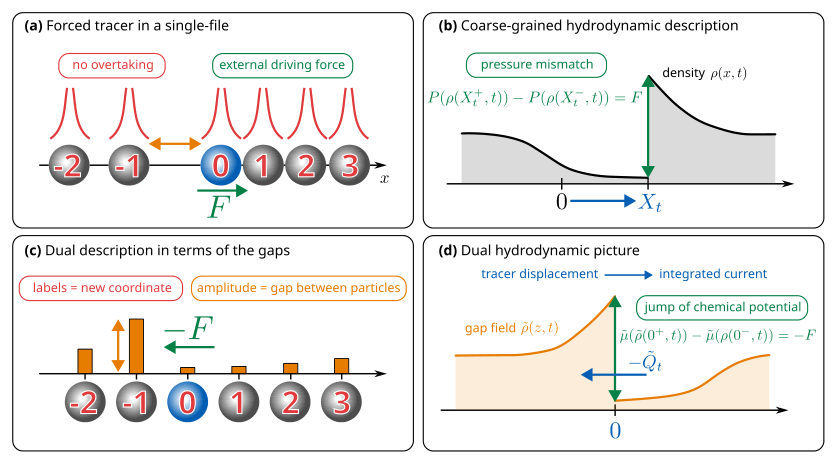
<figcaption class="paper-figure-caption"><b>Fig 1.</b> FIG. 1. From nonlinear active microrheology to a fixed-boundary diffusion problem. (a) A force F drives a tracer in a single file. (b) At the hydrodynamic scale, the force imposes a pressure mismatch across the tracer at its unknown position Xt, defining a moving-boundary problem. (c) The no-passing constraint allows the conserved particle label to be used as a coordinate, fixing the tracer at z = 0. (d) The resulting dual hydrodynamic density ˜ρ obeys a diffusion problem on a fixed domain, with a chemical-potential jump at the origin, while the tracer displacement is given by the integrated dual current.</figcaption>
</figure>
<figure class="paper-figure-card">
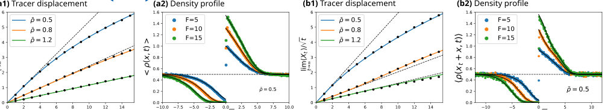
<figcaption class="paper-figure-caption"><b>Fig 2.</b> FIG. 2. Nonlinear active microrheology of interacting Brownian particles. (a) Strictly one-dimensional single-file system with pairwise Calogero interactions V (x) = 1/x2. (a1) Mean tracer-displacement amplitude ξ(F) (see Eq. (1)) as a function of the driving force F, for different mean densities ¯ρ. Solid lines are the predictions of Eqs. (15)–(18), dashed lines are the linear-response prediction (19), and symbols are direct simulations of the Langevin dynamics (22), averaged over 100 realizations. (a2) Mean density profile in the tracer frame at ¯ρ = 0.5, for different forces. Lines are the predictions of Eq. (21) and symbols are simulations averaged over 1000 realizations. (b)...</figcaption>
</figure>
</div>

<p><strong>Summary.</strong> This work provides a rigorous, exact theoretical framework for analyzing nonlinear active microrheology in single-file systems. By employing single-file duality, the authors solve for the force-displacement relationship and the density profile under arbitrary driving forces. This advances the understanding of non-equilibrium statistical mechanics in confined, driven matter.</p>
<p><strong>Why it may be interesting.</strong> The rigorous mathematical framework developed for non-equilibrium transport in confined geometries is highly relevant to understanding driven many-body systems, which share mathematical parallels with quantum many-body dynamics in engineered potentials.</p>
<details>
<summary>Detailed structure</summary>
<p><strong>Main problem.</strong> The paper aims to determine the exact nonlinear response ($\xi(F)$) and the full density profile for a tracer driven by an arbitrary constant force ($F$) in diffusive single-file systems.</p>
<p><strong>Main result.</strong> The authors developed a closed exact boundary-value problem using single-file duality, successfully determining the force-response relation and showing that the bath-density dipole is fixed by the applied force independently of the interaction potential.</p>
<p><strong>Method.</strong> The core methodology involves transforming the complex moving-boundary problem into a fixed-boundary diffusion problem via single-file duality, allowing the use of advanced fluctuation theory and self-similar solutions.</p>
<p><strong>Model / system.</strong> The system models diffusive single-file transport, applicable to molecular transport in zeolites or colloidal particles in narrow channels, described by a fluctuating hydrodynamic equation for the line-density $
ho(x, t)$.</p>
<p><strong>Key observables.</strong> Mean tracer displacement amplitude $\xi(F)$, the full bath density profile $\langle
ho(x, t)
angle$, and the bath-density dipole moment.</p>
<p><strong>Important parameters / regimes.</strong> Applied constant force $F$, time $t$ (leading to $\sqrt{t}$ scaling), and the system's equilibrium equation of state.</p>
<p><strong>Assumptions / limitations.</strong> The analysis relies on the hydrodynamic limit (long times) and the ability to map the local drive onto a pressure mismatch across the tracer.</p>
<p><strong>Figures summary.</strong> Figure 1 illustrates the transformation from the moving-boundary problem to a fixed-boundary diffusion problem using single-file duality. Figure 2 compares predictions for mean tracer displacement and density profile against simulations for various single-file models.</p>
<p><strong>Paper structure.</strong> The paper progresses by first establishing the hydrodynamic framework, then introducing single-file duality to convert the problem into a fixed-boundary diffusion problem. It solves this problem to find the mean response ($\xi(F)$) and density profile, and finally extends the formalism to calculate the full probability distribution via fluctuation theory.</p>
</details>
<details>
<summary>Abstract</summary>
<p>Active microrheology probes a crowded medium by forcing a tracer and measuring its response. In single-file transport, where particles cannot overtake, a constant force $F$ produces a subballistic displacement $\langle X_t\rangle\simeq \sqrt{t}\,ξ(F)$ together with a persistent bath deformation. Despite decades of work, the exact nonlinear response at arbitrary force has remained confined to a few special solvable models. Here we remove this restriction by combining recent advances in hydrodynamic transport coefficients, a pressure-balance formulation of the local drive, and single-file duality, which eliminates the resulting moving boundary. This yields a closed exact boundary-value problem for general diffusive single files, determining both $ξ(F)$ and the full density profile. For overdamped Brownian particles with general interactions, all microscopic interaction details enter only through the equilibrium equation of state, bringing realistic interacting systems, including finite-width quasi-one-dimensional channels, within exact reach. The solution also reveals universal global laws; in particular, the bath-density dipole is fixed by the applied force independently of the interaction potential.</p>
</details>
<p><sub><a href="#top">↑ back to top</a></sub></p>

<p><a id="paper-2609.18851"></a></p>
<h3 id="current-fluctuations-of-diffusive-systems-with-a-battery"><a href="http://arxiv.org/abs/2609.18851v1">Current fluctuations of diffusive systems with a battery</a></h3>
<p><strong>Authors:</strong> Thibaut Jonckheere, Bernard Derrida<br>
<strong>Type:</strong> both · <strong>Category:</strong> statistical mechanics · <strong>PDF:</strong> <a href="https://arxiv.org/pdf/2609.18851v1">https://arxiv.org/pdf/2609.18851v1</a><br>
<strong>Analysis basis:</strong> full PDF text, analyzed in chunks
<strong>Topic relevance:</strong> <code>Full counting statistics</code> <strong>3/5</strong> · <code>methods for driven-dissipative</code> <strong>3/5</strong> · <code>non-equilibrium universality</code> <strong>3/5</strong> · <code>Keldysh / 2PI / non-Gaussian methods</code> <strong>2/5</strong> · <code>driven-dissipative phase transition</code> <strong>2/5</strong> · <code>Frenkel-Kontorova</code> <strong>1/5</strong></p>
<div class="figure-strip-hint">↔ Scroll figures horizontally</div>
<div class="paper-figures-scroll">
<figure class="paper-figure-card">
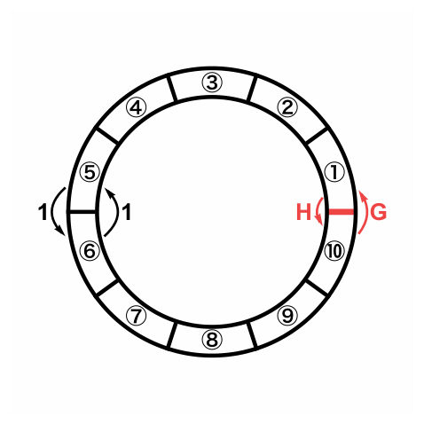
<figcaption class="paper-figure-caption"><b>Fig 1.</b> Figure 1. Schematics of a ring with L = 10 sites. The trans- fer rate through standard links (black) is 1 for both transfer directions. There is one special link (red, thick) between sites L and 1, with transfer rate G from site L to site 1, and trans- fer rate H ≤G from site 1 to site L. This special link plays the role of a battery.</figcaption>
</figure>
<figure class="paper-figure-card">
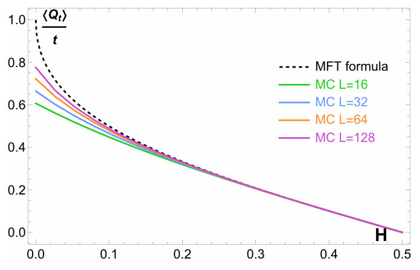
<figcaption class="paper-figure-caption"><b>Fig 2.</b> Figure 2. Average current (multiplied by L) as a function of H = 1 −G, for the SSEP on a ring at density ¯ρ = 1/2, for system sizes L = 16, 32, 64, 128 (obtained by Monte Carlo, with increasing L corresponding to higher curves). The dashed line is the prediction (43) of the MFT.</figcaption>
</figure>
<figure class="paper-figure-card">
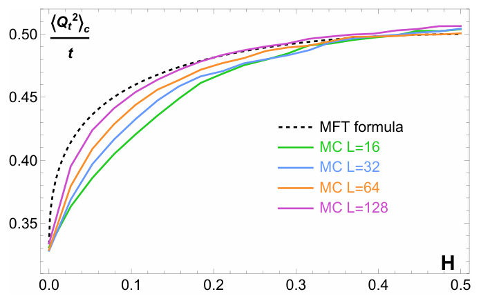
<figcaption class="paper-figure-caption"><b>Fig 3.</b> Figure 3. Second cumulant of the current (multiplied by L) as a function of H = 1 −G for the SSEP on a ring at density ¯ρ = 1/2, for system sizes L = 16, 32, 64, 128 (obtained by Monte Carlo, with increasing L corresponding to higher curves). The dashed line is the prediction (43) of the MFT.</figcaption>
</figure>
<figure class="paper-figure-card">
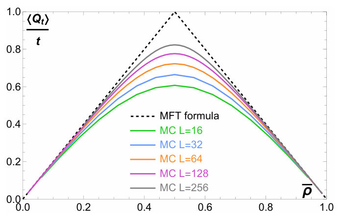
<figcaption class="paper-figure-caption"><b>Fig 4.</b> Figure 4. Average current (multiplied by L) as a function of the density ¯ρ for the SSEP on a ring with a fully directed battery (G = 1, H = 0), for systems sizes L = 16, 32, 64, 128, 256 (obtained by Monte Carlo, with increasing L corresponding to higher curves). The dashed line is the prediction (45)-(46) of the MFT.</figcaption>
</figure>
<figure class="paper-figure-card">
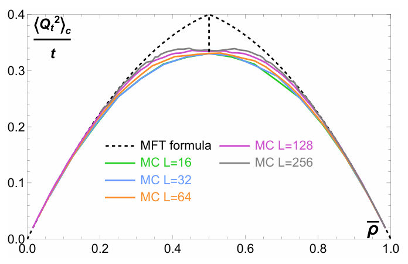
<figcaption class="paper-figure-caption"><b>Fig 5.</b> Figure 5. Second cumulant of the current (multiplied by L) as a function of the density ¯ρ for the SSEP on a ring with a fully directed battery (G = 1, H = 0), for systems sizes L = 16, 32, 64, 128, 256 (obtained by Monte Carlo, with increasing L corresponding to higher curves). The dashed line is the prediction (45)-(46) of the MFT, including the special value 1/3 at ¯ρ = 1/2, as predicted by Eq.(43).</figcaption>
</figure>
</div>

<p><strong>Summary.</strong> This work analyzes current fluctuations in diffusive systems on a ring containing a battery, using Macroscopic Fluctuation Theory. The authors find a surprising mathematical equivalence between the fluctuation statistics of non-interacting particles and those of the SSEP under certain conditions. The research provides detailed comparisons between theoretical predictions and long-time numerical simulations for these non-equilibrium transport phenomena.</p>
<p><strong>Why it may be interesting.</strong> The study bridges classical non-equilibrium statistical mechanics (MFT) with particle exclusion processes (SSEP), providing deep insights into how boundary conditions and particle interactions affect current fluctuations in mesoscopic systems.</p>
<details>
<summary>Detailed structure</summary>
<p><strong>Main problem.</strong> The paper investigates the large deviation function and fluctuation statistics of the current in diffusive systems subjected to a localized non-conservative force (a battery).</p>
<p><strong>Main result.</strong> The large deviation function for non-interacting particles on a ring surprisingly matches the form found for the Symmetric Simple Exclusion Process (SSEP) with open boundary conditions.</p>
<p><strong>Method.</strong> The authors employ Macroscopic Fluctuation Theory (MFT) for analytical predictions and complement this with direct exact microscopic calculations and extensive Monte Carlo simulations.</p>
<p><strong>Model / system.</strong> The system is a diffusive particle model on a ring containing a battery at the origin. Models include non-interacting particles and the SSEP, which are analyzed under steady-state conditions.</p>
<p><strong>Key observables.</strong> Large deviation function of the current, average occupations, density profiles, and the second cumulant of the integrated current.</p>
<p><strong>Important parameters / regimes.</strong> The particle density ($ar{
ho}$), the battery strength ($G, H$), and the system size ($L$) are key parameters explored across different regimes.</p>
<p><strong>Assumptions / limitations.</strong> MFT relies on assumptions about the optimal profile being time-independent, and the analysis compares results derived from different theoretical limits (e.g., non-interacting vs. SSEP).</p>
<p><strong>Figures summary.</strong> Figures compare the average current and the second cumulant of the current (MC vs. MFT) as a function of density, notably highlighting a specific value of 1/3 at half-filling for the SSEP.</p>
<p><strong>Paper structure.</strong> The paper progresses by first establishing the framework using MFT for current fluctuations, then deriving specific results for non-interacting particles, and finally comparing these findings and the second cumulant analysis for the SSEP against long Monte Carlo simulations.</p>
</details>
<details>
<summary>Abstract</summary>
<p>For a diffusive system on a ring, with a battery at the origin, we use the macroscopic fluctuation theory (MFT) to obtain the large deviation function of the current. In the case of non-interacting particles, the predictions of the MFT agree with the result of a direct exact microscopic calculation. To our surprise, the large deviation function of non-interacting particles with a battery has the same form as for the Symmetric Simple Exclusion Process (SSEP) with open boundary conditions. For the SSEP on a ring with a battery, the predictions of the MFT seem to agree with the results of long Monte Carlo simulations, although much longer simulations would be needed to better test the validity of these predictions.</p>
</details>
<p><sub><a href="#top">↑ back to top</a></sub></p>

<p><a id="paper-2609.18464"></a></p>
<h3 id="lindbladian-quantum-chaos-beyond-classical-strange-attractors"><a href="http://arxiv.org/abs/2609.18464v1">Lindbladian quantum chaos beyond classical strange attractors</a></h3>
<p><strong>Authors:</strong> Ángel L. Corps, Armando Relaño<br>
<strong>Type:</strong> theory · <strong>Category:</strong> statistical mechanics · <strong>PDF:</strong> <a href="https://arxiv.org/pdf/2609.18464v1">https://arxiv.org/pdf/2609.18464v1</a><br>
<strong>Analysis basis:</strong> full PDF text, analyzed in chunks
<strong>Topic relevance:</strong> <code>correlated / nonlocal dissipation</code> <strong>3/5</strong> · <code>driven-dissipative phase transition</code> <strong>3/5</strong> · <code>methods for driven-dissipative</code> <strong>3/5</strong> · <code>non-equilibrium universality</code> <strong>2/5</strong> · <code>Keldysh / 2PI / non-Gaussian methods</code> <strong>1/5</strong> · <code>quantum measurements</code> <strong>1/5</strong> · <code>scars &amp; prethermalization</code> <strong>1/5</strong></p>
<div class="figure-strip-hint">↔ Scroll figures horizontally</div>
<div class="paper-figures-scroll">
<figure class="paper-figure-card">
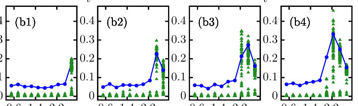
<figcaption class="paper-figure-caption"><b>Fig 1.</b> FIG. 1. Infinite-size limit: onset of classical chaos. (a1-a2) Time evolution of the magnetization along the z-axis for the first spin subsystem. Two slightly different initial conditions are considered in both cases: Γ = 2.2 &lt; Γ푐, m(0) = (−0.04309, 0.9227, 0.9074, −0.3592, −0.4180, 0.1401) (purple lines) and m(0) = (−0.04286, 0.9224, 0.9068, −0.3599, −0.4193, 0.1405) (red lines). For (a1), Γ = 3 &gt; Γ푐, and for (a2), Γ = 2.2 &lt; Γ푐. (b1-b4) Standard deviations of the normalized critical relaxation time, 푡crit/휏, as a function of Γ for initial conditions at distances 푑= 0.8, 1.2, 1.6, and 2 from the stable fixed point, respectively. For each (Γ, 푑), 100 random initial conditions are generated, and...</figcaption>
</figure>
<figure class="paper-figure-card">
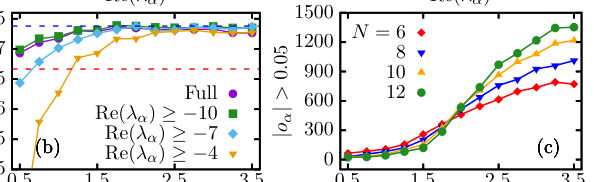
<figcaption class="paper-figure-caption"><b>Fig 2.</b> FIG. 2. Signatures of dissipative quantum chaos. (a1-a2) Expectation values of ˆ푆1푧in the right eigenvectors ˆ푅훼as a function of the real part of the Liouvillian eigenvalues 휆훼. Real (red circles) and imaginary (blue triangles) parts are plotted separately, for (a1) Γ = 1.5 &lt; Γ푐 and (a2) Γ = 2.5 &gt; Γ푐and 푁= 12. (b) Average value of the complex ratio of nearest-neighbor eigenvalues on the complex plane [38] as a function of Γ for 푁= 12, for the full spectrum (purple circles) and for Liouvillian eigenvalues with different Re(휆훼). The blue dashed line represents the random-matrix GinUE value ⟨푟⟩≈0.738 while the red dashed line represents the Poisson average ⟨푟⟩= 2/3. (c) Number of Liouvillian...</figcaption>
</figure>
</div>

<p><strong>Summary.</strong> This paper examines chaos in an open quantum system of coupled spins, linking classical dynamics to quantum spectral properties. It demonstrates that quantum signatures of chaos, such as random-matrix statistics, can appear during the transient approach to a stable fixed point, rather than requiring the classical system to possess a fully chaotic attractor. This refines existing conjectures regarding quantum-classical correspondence in dissipative environments.</p>
<p><strong>Why it may be interesting.</strong> This work directly addresses the quantum-classical correspondence in open quantum systems, providing a mechanism to detect quantum chaotic signatures even when the classical dynamics settle into a stable, non-chaotic steady state.</p>
<details>
<summary>Detailed structure</summary>
<p><strong>Main problem.</strong> The paper investigates the connection between classical and quantum chaos in a dissipative system, specifically exploring if quantum chaos signatures can arise from transient classical chaos rather than requiring a fully chaotic asymptotic attractor.</p>
<p><strong>Main result.</strong> Liouvillian quantum chaos can be associated with transient classical chaos, suggesting a refinement of the Grobe–Haake–Sommers conjecture.</p>
<p><strong>Method.</strong> The study employs both classical stability analysis (analyzing fixed points and relaxation times) and quantum spectral analysis (diagonalizing the Liouvillian superoperator and examining spectral statistics).</p>
<p><strong>Model / system.</strong> The system is a quantum many-body model of two coupled collective spins, whose dynamics are governed by a Lindblad master equation. The classical limit is obtained by analyzing the expectation values of the spin operators.</p>
<p><strong>Key observables.</strong> Liouvillian spectrum (eigenvalues), random-matrix statistics ($
ho_{\lambda}$), expectation values of physical observables, and the standard deviations of the relaxation time ($\sigma_{
ho}, \sigma_{\epsilon}$).</p>
<p><strong>Important parameters / regimes.</strong> The dissipation strength ($\Gamma$) relative to a critical bifurcation point ($\Gamma_c$), and the initial distance from the fixed point ($\delta_{	ext{initial}}$).</p>
<p><strong>Assumptions / limitations.</strong> The classical analysis relies on the mean-field approximation, and the quantum analysis focuses on restricting spectral statistics to regions with significant observable expectation values.</p>
<p><strong>Figures summary.</strong> Figures illustrate the time evolution of magnetization for both chaotic and stable regimes, and show the dependence of spectral statistics and the number of contributing eigenmodes on the dissipation strength $\Gamma$.</p>
<p><strong>Paper structure.</strong> The paper progresses by first establishing the classical dynamics and identifying regimes (chaotic vs. stable fixed point). It then maps these classical behaviors onto quantum diagnostics, showing the emergence of random-matrix statistics and changes in observable expectation values in the Liouvillian spectrum, particularly in the transient regime.</p>
</details>
<details>
<summary>Abstract</summary>
<p>We investigate the connection between classical and quantum chaos in a dissipative system of two coupled collective spins. Although the classical dynamics possesses a stable fixed-point attractor, we find pronounced signatures of chaos in the transient dynamics preceding relaxation. In the quantum model, such transient chaos is accompanied by a transition to random-matrix statistics in the relevant part of the Liouvillian spectrum and by a qualitative increase in the number of Liouvillian modes contributing to expectation values of physical observables. The transition occurs before the bifurcation at which the stable fixed point disappears and a chaotic attractor emerges. Our results show that Liouvillian quantum chaos can be associated with transient classical chaos, rather than requiring a chaotic asymptotic attractor, and provide a refinement of the Grobe-Haake-Sommers conjecture.</p>
</details>
<p><sub><a href="#top">↑ back to top</a></sub></p>

<p><a id="paper-2609.17716"></a></p>
<h3 id="activity-induced-emergent-flatness-instabilities-and-pattern-formation-in-fluid-membranes"><a href="http://arxiv.org/abs/2609.17716v1">Activity-induced emergent flatness, instabilities and pattern formation in fluid membranes</a></h3>
<p><strong>Authors:</strong> Debayan Jana, Astik Haldar, Abhik Basu<br>
<strong>Type:</strong> theory · <strong>Category:</strong> statistical mechanics · <strong>PDF:</strong> <a href="https://arxiv.org/pdf/2609.17716v1">https://arxiv.org/pdf/2609.17716v1</a><br>
<strong>Analysis basis:</strong> full PDF text, analyzed in chunks
<strong>Topic relevance:</strong> <code>driven-dissipative phase transition</code> <strong>3/5</strong> · <code>non-equilibrium universality</code> <strong>3/5</strong> · <code>Keldysh / 2PI / non-Gaussian methods</code> <strong>2/5</strong> · <code>methods for driven-dissipative</code> <strong>2/5</strong> · <code>Frenkel-Kontorova</code> <strong>1/5</strong> · <code>analog quantum simulation</code> <strong>1/5</strong> · <code>correlated / nonlocal dissipation</code> <strong>1/5</strong></p>
<div class="figure-strip-hint">↔ Scroll figures horizontally</div>
<div class="paper-figures-scroll">
<figure class="paper-figure-card">
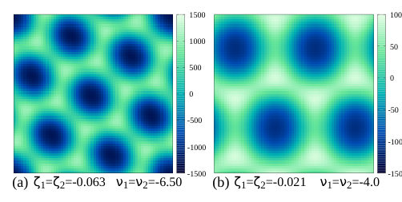
<figcaption class="paper-figure-caption"><b>Fig 1.</b> FIG. 1. Snapshots of the steady-state height profiles (L = 64) showing isotropic pattern with η′ = 0.02, K = 1, Dh = 0.001, and δt = 0.01. Panel (a) qx c = qy c ≈0.26 with λ = −0.005, while panel (b) qx c = qy c ≈0.17 with λ = −0.05. The change in qc modifies the pattern periodicity. See text.</figcaption>
</figure>
<figure class="paper-figure-card">
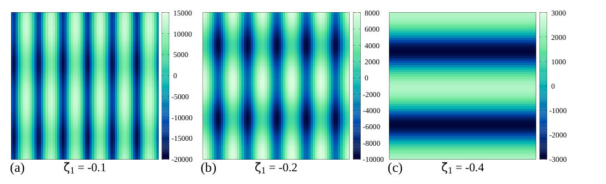
<figcaption class="paper-figure-caption"><b>Fig 2.</b> FIG. 2. Steady anisotropic patterns (L = 64) with η′ = 0.02, K = 1, λ = 0.001, Dh = 0.001 and δt = 0.01 for different values of ζ1, with parameters ν1 = −12, ν2 = −4, and ζ2 = −0.02 corresponding to panels (a)-(c). See text.</figcaption>
</figure>
<figure class="paper-figure-card">
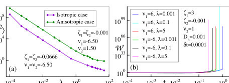
<figcaption class="paper-figure-caption"><b>Fig 3.</b> FIG. 3. Log-log plots of (a) ⟨(δh)2⟩versus λ for the isotropic case (Dh = 0.001) and the anisotropic case (Dh = 0.1) with δt = 0.001. The height fluctuations decrease with increasing |λ|. (b) W versus t for different values of ν and λ. When the model is unstable by at least one of the ζi-terms, the width grows rapidly, and diverges, possibly indicating membrane crumpling. The remaining parameters are fixed at η′ = 0.02, K = 1 and L = 64, (see text).</figcaption>
</figure>
<figure class="paper-figure-card">
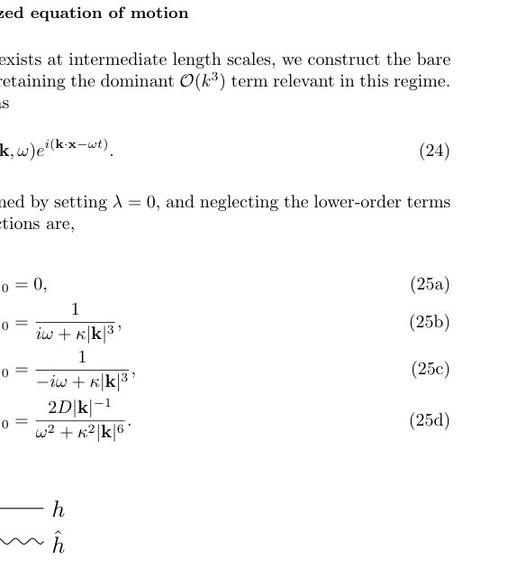
<figcaption class="paper-figure-caption"><b>Fig 4.</b> FIG. 4. Diagrammatic representations of two point functions.</figcaption>
</figure>
<figure class="paper-figure-card">
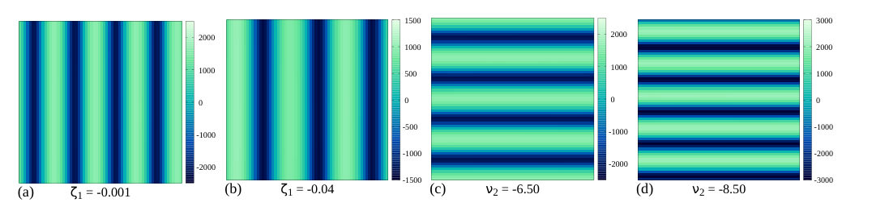
<figcaption class="paper-figure-caption"><b>Fig 5.</b> FIG. 7. Snapshots of the steady-state height profiles (L = 64) in the patterned phase. Panels (a) and (b) correspond to ν1 = −6.50, ν2 = 1.50, and ζ2 = −0.001, where varying ζ1 changes the pattern periodicity. Panels (c) and (d) correspond to ν1 = 1.50 and ζ1 = ζ2 = −0.001, where varying ν2 modifies the periodicity. In all cases, the remaining parameters are fixed at η′ = 0.02, K = 1, λ = 0.005, Dh = 0.10, and δt = 0.001.</figcaption>
</figure>
</div>

<p><strong>Summary.</strong> This paper analyzes the complex dynamics of active fluid membranes, showing how they achieve emergent symmetry at large scales while exhibiting rich pattern formation at intermediate length scales. The dynamics are governed by a modified hydrodynamic equation, which predicts instabilities driven by active stresses. The work details how nonlinearity can stabilize or destroy these patterned states depending on its magnitude.</p>
<p><strong>Why it may be interesting.</strong> The study of non-equilibrium pattern formation and symmetry breaking in active matter systems provides theoretical frameworks applicable to complex many-body dynamics, which shares conceptual links with driven quantum many-body systems.</p>
<details>
<summary>Detailed structure</summary>
<p><strong>Main problem.</strong> The study investigates the non-equilibrium dynamics, emergent symmetries, instabilities, and pattern formation in active fluid membranes.</p>
<p><strong>Main result.</strong> The membrane exhibits emergent flatness and quasi-long-range order at large scales, but active stresses can induce instabilities leading to pattern formation at intermediate scales.</p>
<p><strong>Method.</strong> The analysis employs hydrodynamic theory, Renormalization Group (RG) techniques, and linear stability analysis applied to the height field equation.</p>
<p><strong>Model / system.</strong> The system is a nearly flat, inversion-asymmetric, permeable active fluid membrane embedded in a 3D bulk isotropic fluid, modeled by a height field $h(x, t)$.</p>
<p><strong>Key observables.</strong> Height fluctuations $\langle(\delta h)^2
angle$, scaling exponents ($\chi, 	ilde{z}$), and the selection of preferred wavevectors ($q_c$) leading to stripe patterns.</p>
<p><strong>Important parameters / regimes.</strong> Active hydrodynamic tension ($\zeta_1, \zeta_2$), viscosities ($
u_1, 
u_2$), bending stiffness ($K$), and the nonlinearity parameter ($\lambda$).</p>
<p><strong>Assumptions / limitations.</strong> The analysis utilizes the Stokesian limit (neglecting inertia) and makes approximations regarding the relevance of nonlinear terms in the RG sense.</p>
<p><strong>Figures summary.</strong> Figures illustrate steady-state anisotropic patterns under varying parameters, show the stability profile of the dispersion relation $\lambda_h(q)$, and demonstrate the robustness of the patterned phase against initial conditions and the suppression of patterns by increasing $|\lambda|$.</p>
<p><strong>Paper structure.</strong> The paper progresses from establishing the long-wavelength, statistically flat regime (emergent symmetry) to analyzing the intermediate-scale dynamics governed by KPZ-like equations. It then uses linear stability analysis to predict pattern formation at finite wavevectors, concluding with numerical verification of pattern robustness and the role of nonlinearity in suppressing these patterns.</p>
</details>
<details>
<summary>Abstract</summary>
<p>We show that microscopically inversion-asymmetric, permeable active fluid membranes are statistically flat and effectively inversion-symmetric at large scales. Their fluctuations are governed by an asymptotically exact linear hydrodynamic equation giving orientational long-range order and positional quasi-long-range order. At intermediate scales, their dynamics is described by a Kardar-Parisi-Zhang equation with spatially long-range noise, producing rough membranes with short-range translational and long-range orientational order described by exactly known scaling exponents. Active stresses can destabilize the membrane at long wavelengths, while sufficiently strong active permeation flow can drive finite-wavevector instabilities and pattern formation. These results reveal a novel activity-driven route to the destruction of flat fluid membranes.</p>
</details>
<p><sub><a href="#top">↑ back to top</a></sub></p>

<p><a id="paper-2609.17677"></a></p>
<h3 id="hydrodynamic-memory-in-overdamped-colloidal-dynamics"><a href="http://arxiv.org/abs/2609.17677v1">Hydrodynamic memory in overdamped colloidal dynamics</a></h3>
<p><strong>Authors:</strong> Benjamin Sorkin, Günther Turk, Howard A. Stone<br>
<strong>Type:</strong> theory · <strong>Category:</strong> statistical mechanics · <strong>PDF:</strong> <a href="https://arxiv.org/pdf/2609.17677v1">https://arxiv.org/pdf/2609.17677v1</a><br>
<strong>Analysis basis:</strong> full PDF text, analyzed in chunks
<strong>Topic relevance:</strong> <code>correlated / nonlocal dissipation</code> <strong>3/5</strong> · <code>Keldysh / 2PI / non-Gaussian methods</code> <strong>2/5</strong> · <code>methods for driven-dissipative</code> <strong>2/5</strong> · <code>Frenkel-Kontorova</code> <strong>1/5</strong> · <code>analog quantum simulation</code> <strong>1/5</strong> · <code>driven-dissipative phase transition</code> <strong>1/5</strong> · <code>non-equilibrium universality</code> <strong>1/5</strong> · <code>quantum measurements</code> <strong>1/5</strong> · <code>scars &amp; prethermalization</code> <strong>1/5</strong></p>
<div class="figure-strip-hint">↔ Scroll figures horizontally</div>
<div class="paper-figures-scroll">
<figure class="paper-figure-card">
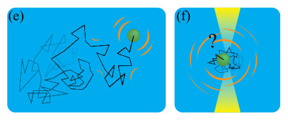
<figcaption class="paper-figure-caption"><b>Fig 1.</b> FIG. 1. Illustration of colloidal dynamics across time scales. (a) The colloid first encounters the surrounding liquid via molecular colli- sions, beyond which the hydrodynamic limit may be reached. (b) The fluid is effectively compressible at nanoseconds (density vari- ations denoted in color). (c) In an incompressible low-Reynolds- number flow, a colloid experiences Stokes friction (dark blue ar- rows), added mass due to displaced-fluid inertia (region enclosed in red), and Basset memory due to scale-free fluid-momentum diffusion (orange arcs). (d) In this work, we provide a theory incorporating Basset memory in the overdamped (inertialess) limit, which is ap- plicable after microseconds....</figcaption>
</figure>
<figure class="paper-figure-card">
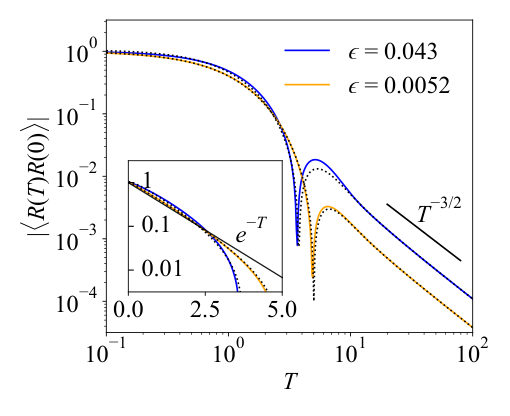
<figcaption class="paper-figure-caption"><b>Fig 2.</b> FIG. 2. Nondimensionalized positional autocorrelation function of a harmonically trapped colloid versus time in a log-log plot. The solid curves are numerical solutions to the full fluctuating Basset- Boussinesq-Ossen equation, Eq. (5), evaluated through a Fourier transform (Eq. (10)). Color corresponds to the indicated ϵ values (Eq. (6)), which we chose to correspond to the two experiments in Ref. [23]. The directly adjacent black dashed curves are our late-time prediction, Eq. (9), found from the overdamped Basset-Langevin equation (Eq. (7)). Inset: A log-linear plot of the early-time, primar- ily exponential decay of the positional autocorrelation function. We clearly see the crossover...</figcaption>
</figure>
</div>

<p><strong>Summary.</strong> This work theoretically proves that hydrodynamic memory, characterized by a power-law decay, survives even when simplifying the dynamics to the overdamped (inertialess) limit for colloidal particles. By deriving a closed-form Basset-Langevin equation, the authors provide a more accurate description of particle motion than conventional models. This is crucial for interpreting high-resolution experiments that observe long-time positional correlations.</p>
<p><strong>Why it may be interesting.</strong> While focused on classical fluid dynamics, the rigorous derivation of memory effects in the low-Reynolds number limit provides a powerful theoretical framework for understanding non-Markovian dynamics, which has parallels in open quantum systems and quantum dissipation.</p>
<details>
<summary>Detailed structure</summary>
<p><strong>Main problem.</strong> The paper addresses the fate of power-law hydrodynamic memory in the overdamped (inertialess) limit for colloidal particle dynamics.</p>
<p><strong>Main result.</strong> The authors derive a closed-form, overdamped Basset-Langevin equation that successfully incorporates hydrodynamic memory, showing it persists even when particle inertia is neglected.</p>
<p><strong>Method.</strong> The primary method involves performing a small-$\epsilon$ expansion on the full equation of motion, eliminating the velocity variable to derive the final memory-inclusive equation.</p>
<p><strong>Model / system.</strong> The system is micron-sized colloid particles diffusing through a fluid, modeled using Langevin dynamics that accounts for Stokes drag, added mass, and a power-law Basset memory term.</p>
<p><strong>Key observables.</strong> Velocity autocorrelation function (expected power-law decay $\sim t^{-3/2}$), Mean-squared displacement (MSD), and positional autocorrelation functions.</p>
<p><strong>Important parameters / regimes.</strong> The dimensionless parameter $\epsilon$ controls the crossover between early-time (exponential) and late-time (power-law) dynamics; smaller particles enhance memory effects.</p>
<p><strong>Assumptions / limitations.</strong> The analysis assumes the system operates in the low-Reynolds-number, incompressible flow limit, and the standard overdamped model is insufficient as it ignores power-law memory.</p>
<p><strong>Figures summary.</strong> Figures illustrate the hierarchy of time scales, showing how the theory incorporating Basset memory predicts a crossover from conventional exponential relaxation to memory-dominated power-law decay.</p>
<p><strong>Paper structure.</strong> The paper progresses from the full underdamped equation to the overdamped limit via small-$\epsilon$ expansion, deriving the final Basset-Langevin equation, and then applying this theory to predict measurable long-time correlations.</p>
</details>
<details>
<summary>Abstract</summary>
<p>Micron-sized colloid particles diffusing through a fluid experience hydrodynamic inertial and memory effects, the latter causing velocity autocorrelation to decay as a power law. At the same time, many theoretical descriptions treat colloidal diffusion in a fluid using overdamped Langevin dynamics for its convenience, eliminating velocity, omitting inertia, but also ignoring the power-law memory. In this Letter, we show that hydrodynamic memory survives in the overdamped (colloid-inertialess) limit. By identifying the dimensionless parameter controlling the crossover between early- and late-time dynamics, we derive in closed form the overdamped Langevin equation in the presence of hydrodynamic memory. This provides a theoretical framework for realistically describing colloidal dynamics in a fluid, and establishes a rigorous basis for the positional memory observed in high-resolution experiments. Our theory predicts that hydrodynamic memory becomes increasingly pronounced for smaller particles and under stronger external forcing, and offers experimental probes for the crossover from conventional exponential relaxation to memory-dominated power-law dynamics.</p>
</details>
<p><sub><a href="#top">↑ back to top</a></sub></p>

<p><a id="paper-2609.17694"></a></p>
<h3 id="efficiency-resolved-recovery-dynamics-of-an-free-running-ingaasinp-single-photon-avalanche-detector-operated-in-gated-mode"><a href="http://arxiv.org/abs/2609.17694v1">Efficiency-Resolved Recovery Dynamics of an Free-Running InGaAs/InP Single Photon Avalanche Detector Operated in Gated Mode</a></h3>
<p><strong>Authors:</strong> Bruno Santos Souza, Vitor Tavares, Filippo Ghiglieno, Celso Jorge Villas-Boas, Paulo Henrique Dias Ferreira<br>
<strong>Type:</strong> experiment · <strong>Category:</strong> other · <strong>PDF:</strong> <a href="https://arxiv.org/pdf/2609.17694v1">https://arxiv.org/pdf/2609.17694v1</a><br>
<strong>Analysis basis:</strong> full PDF text, analyzed in chunks
<strong>Topic relevance:</strong> <code>Full counting statistics</code> <strong>3/5</strong> · <code>methods for driven-dissipative</code> <strong>2/5</strong> · <code>quantum measurements</code> <strong>2/5</strong> · <code>quantum optics experiment</code> <strong>2/5</strong> · <code>correlated / nonlocal dissipation</code> <strong>1/5</strong> · <code>driven-dissipative phase transition</code> <strong>1/5</strong> · <code>non-equilibrium universality</code> <strong>1/5</strong></p>
<div class="figure-strip-hint">↔ Scroll figures horizontally</div>
<div class="paper-figures-scroll">
<figure class="paper-figure-card">
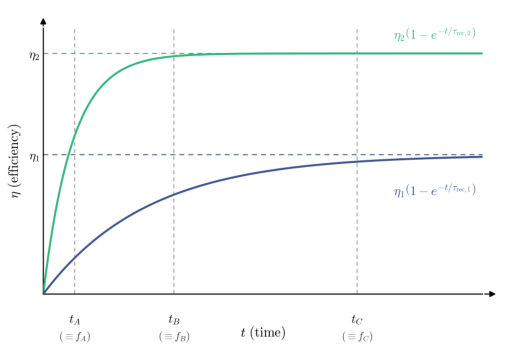
<figcaption class="paper-figure-caption"><b>Fig 1.</b> Fig. 1. Schematic exponential recovery of the local detection efficiency η(t) toward its asymptotic value η0 [Eq. (1)], shown for two representative operating points, η1 &lt; η2, with τrec,2 &lt; τrec,1. The curves are drawn schematically, not fitted to data, to isolate the qualitative effect. Vertical lines mark three gate durations tA &lt; tB &lt; tC, equivalently three gate frequencies fA &gt; fB &gt; fC through t = W = D/f: at short gate duration (tA) neither curve has saturated, while at long gate duration (tC) both approach their respective plateaus.</figcaption>
</figure>
<figure class="paper-figure-card">
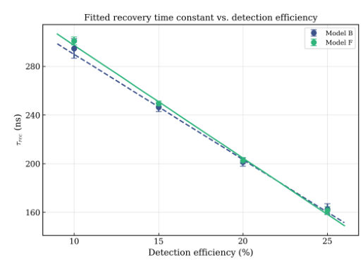
<figcaption class="paper-figure-caption"><b>Fig 2.</b> Fig. 2. Recovery time constant τrec versus detection efficiency for the Baseline (B) and Full (F) models, CB(f) and CF(f), with the weighted linear fit of Eq. (11).</figcaption>
</figure>
<figure class="paper-figure-card">
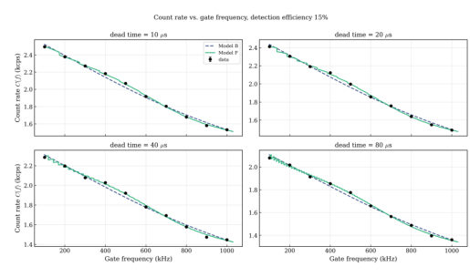
<figcaption class="paper-figure-caption"><b>Fig 3.</b> Fig. 3. Representative C(f) curves at η = 15 % for all four dead times, with Baseline and Full model fits overlaid. The legend in the top-left panel applies to all panels.</figcaption>
</figure>
<figure class="paper-figure-card">
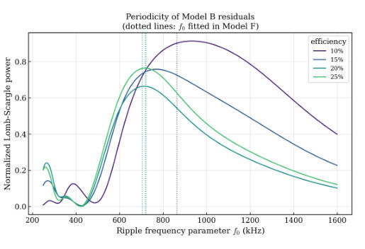
<figcaption class="paper-figure-caption"><b>Fig 4.</b> Fig. 4. Lomb-Scargle periodogram of the Baseline Model residuals, showing peaks near the independently fitted f0 at each efficiency.</figcaption>
</figure>
<figure class="paper-figure-card">
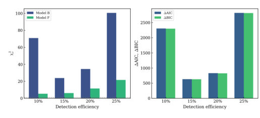
<figcaption class="paper-figure-caption"><b>Fig 5.</b> Fig. 5. χ2 ν, ∆AIC, and ∆BIC across the four detection efficiencies.</figcaption>
</figure>
</div>

<p><strong>Summary.</strong> This work characterizes the recovery dynamics of gated SPADs by sweeping the gate frequency, revealing that the recovery time constant systematically decreases as detection efficiency increases. The authors developed a sophisticated model that successfully accounts for both the exponential recharge process and parasitic capacitive modulations in the count rate. This provides crucial, quantitative data for optimizing SPAD performance in quantum key distribution systems.</p>
<p><strong>Why it may be interesting.</strong> While the core physics is semiconductor device characterization, the rigorous application of time-domain modeling (exponential recovery) and advanced statistical fitting (AIC/BIC model selection) to extract fundamental physical constants ($ au_{rec}$) from complex, rate-limited measurements is relevant to open quantum systems modeling.</p>
<details>
<summary>Detailed structure</summary>
<p><strong>Main problem.</strong> The paper addresses the challenge of characterizing the recovery dynamics of Single Photon Avalanche Detectors (SPADs) when operated in a gated mode, as this recovery process limits the achievable count rates in practical quantum communication systems.</p>
<p><strong>Main result.</strong> The recovery time constant ($  au_{rec}$) was found to decrease linearly with increasing detection efficiency ($\eta$), a dependence that contrasts with previous assumptions for free-running detectors. The analysis also resolved a periodic modulation in the count rate attributed to capacitive gate feedthrough.</p>
<p><strong>Method.</strong> A novel frequency-sweep method using continuous-wave illumination was employed to globally fit count rates across multiple dead times, avoiding the need for high-speed pulsed lasers or time-to-digital converters.</p>
<p><strong>Model / system.</strong> The physical system is an InGaAs/InP SPAD operated in a gated mode. The analysis uses an exponential recovery model ($\eta(t)$) and incorporates a 'Full Model' that accounts for discrete re-arming and capacitive ripple effects beyond simple dead-time limitations.</p>
<p><strong>Key observables.</strong> Count rate $C(f)$ as a function of gate frequency $f$, and the recovery time constant $   au_{rec}$ as a function of detection efficiency $\eta$.</p>
<p><strong>Important parameters / regimes.</strong> Recovery time constant ($   au_{rec}$), Detection Efficiency ($\eta$), Gate Frequency ($f$), and modulation parameters ($a, f_0, \phi$).</p>
<p><strong>Assumptions / limitations.</strong> The detection efficiency recovers exponentially toward a steady-state value ($\eta_0$), and the analysis relies on fitting count rates across multiple dead times using a global least-squares approach.</p>
<p><strong>Figures summary.</strong> Figures illustrate the exponential recovery profile, the dependence of $   au_{rec}$ on $\eta$, and the count rate modulation curves compared between baseline and full models.</p>
<p><strong>Paper structure.</strong> The paper introduces the problem of gated recovery limits, develops and compares theoretical models (Baseline vs. Full Model) incorporating recharge dynamics and ripple effects, presents the frequency-sweep measurement methodology, and concludes with quantitative results on $   au_{rec}(\eta)$ and modulation analysis.</p>
</details>
<details>
<summary>Abstract</summary>
<p>Detection efficiency in gated-mode single-photon avalanche detectors recovers gradually after each gate edge, limiting attainable count rates, yet quantitative recovery models exist only for free-running operation. We extract the gated recovery time constant of a free-running InGaAs/InP detector at 1550 nm by sweeping the gate frequency from 100 kHz to 1 MHz and globally fitting count rates across four dead times, requiring neither a pulsed laser nor a time-to-digital converter. The recovery time decreases linearly with detection efficiency, from 301 to 161 ns between 10 % and 25 %, at 9.3 ns per percentage point. We further resolve a periodic count-rate modulation consistent with bias-dependent capacitive gate feedthrough.</p>
</details>
<p><sub><a href="#top">↑ back to top</a></sub></p>

<p><a id="paper-2609.19124"></a></p>
<h3 id="flag-game-a-toy-model-for-mechanistic-swarm-interpretability"><a href="http://arxiv.org/abs/2609.19124v1">Flag Game: A Toy Model for Mechanistic Swarm Interpretability</a></h3>
<p><strong>Authors:</strong> Elizabeth Pavlova, Hidenori Tanaka<br>
<strong>Type:</strong> both · <strong>Category:</strong> statistical mechanics · <strong>PDF:</strong> <a href="https://arxiv.org/pdf/2609.19124v1">https://arxiv.org/pdf/2609.19124v1</a><br>
<strong>Analysis basis:</strong> full PDF text, analyzed in chunks
<strong>Topic relevance:</strong> <code>driven-dissipative phase transition</code> <strong>3/5</strong> · <code>non-equilibrium universality</code> <strong>3/5</strong> · <code>analog quantum simulation</code> <strong>2/5</strong> · <code>methods for driven-dissipative</code> <strong>2/5</strong> · <code>Keldysh / 2PI / non-Gaussian methods</code> <strong>1/5</strong> · <code>quantum measurements</code> <strong>1/5</strong></p>
<div class="figure-strip-hint">↔ Scroll figures horizontally</div>
<div class="paper-figures-scroll">
<figure class="paper-figure-card">
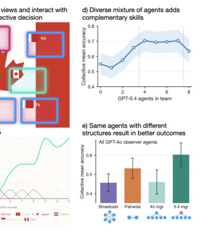
<figcaption class="paper-figure-caption"><b>Fig 1.</b> Figure 1: The Flag Game (demo website: https://flag-game-demo.vercel.app) exhibits rich collective phenomenology despite its simplicity. (a) A hidden flag is observed through private evidence; bounded agents exchange reports, and the system tracks agent’s country guess. (b–e) Collective mean accuracy (Sec. 3) under four controls: population size (b), social-awareness prompting (c), team diversity (d), and organizational structure (e).</figcaption>
</figure>
<figure class="paper-figure-card">

<figcaption class="paper-figure-caption"><b>Fig 2.</b> Figure 2: Protocol structure and performance in the Flag Game. (a) Each trial samples a hidden flag, assigns private crops, elicits initial guesses, and then runs one of three protocols. (b) A N = 8 sweep across 60 trials compares accuracy, ordering by descending collective mean accuracy.</figcaption>
</figure>
<figure class="paper-figure-card">

<figcaption class="paper-figure-caption"><b>Fig 3.</b> Figure 3: With large N, polarization reduces accuracy. (a) In all-GPT-4o pairwise runs, collective accuracy is higher than initial accuracy, peaking at intermediate N. (b) As N grows, wrong consensus becomes less common while polarization become more frequent. (c–d) A representative France–Peru run at N = 4, 16, 64 shows final predictions over initial crop locations and country-share trajectories.</figcaption>
</figure>
<figure class="paper-figure-card">

<figcaption class="paper-figure-caption"><b>Fig 4.</b> Figure 4: Single-agent test reveals complementary error modes behind diverse team gains. (a) Broadcast team-diversity result for N = 8, m = 3, showing mixed teams achieve highest collective accuracy. (b) Isolated country responses for GPT-4o and GPT-5.4 over 100 runs. Exact accuracy is similar, but GPT-5.4 produces more visually incompatible answers. (c) Examples illustrating cases where GPT-4o chooses the correct country while GPT-5.4 misconstrues its private evidence.</figcaption>
</figure>
<figure class="paper-figure-card">

<figcaption class="paper-figure-caption"><b>Fig 5.</b> Figure 5: Local social memory probe isolates update behavior conditional on private evidence. (a) A target flag gives private evidence to the agent, while memory contains a shuffled mixture of target country and conflicting social country entries. (b) Agent responses as the memory ratio shifts from target-heavy to social-heavy, across two private-evidence regimes: weak (left), where multiple countries match the private crop, and strong (right), where only the target country matches.</figcaption>
</figure>
</div>

<p><strong>Summary.</strong> This work introduces the Flag Game, a toy model to study how AI agents form and update collective beliefs based on private data and social evidence. The authors demonstrate that collective behavior shifts from collapse to polarization as population size increases, developing both attribution techniques and a statistical mechanical theory to mechanistically understand these emergent social dynamics.</p>
<p><strong>Why it may be interesting.</strong> While the subject is AI/social science, the mathematical tools—phase diagrams, mean-field approximations, and analyzing emergent collective states—are directly analogous to modeling phase transitions in complex physical systems.</p>
<details>
<summary>Detailed structure</summary>
<p><strong>Main problem.</strong> The paper investigates the mechanisms of collective belief formation and coordination in AI agents, which is framed as a problem of emergent collective behavior.</p>
<p><strong>Main result.</strong> The Flag Game exhibits a shift from collective belief collapse at small populations to collective belief polarization at large populations, which can be modeled using statistical mechanical theory.</p>
<p><strong>Method.</strong> The authors combine empirical simulation (using the Flag Game) with theoretical development, introducing social circuit attribution and deriving a statistical mechanical theory for large populations.</p>
<p><strong>Model / system.</strong> The Flag Game is a toy model where bounded agents observe private evidence (a 'crop') of a hidden ground truth (flag) and update beliefs through communication protocols (pairwise, broadcast, manager).</p>
<p><strong>Key observables.</strong> Collective mean accuracy, belief polarization vs. collapse, social uplift ($\Delta_{	ext{social}}$), and the social circuit attribution score ($S_i$).</p>
<p><strong>Important parameters / regimes.</strong> Population size ($N$), social-evidence uptake ($\alpha$), communication protocol, and the relative weight given to private vs. social evidence.</p>
<p><strong>Assumptions / limitations.</strong> The Flag Game is a simplified model for mechanistic interpretability, and the statistical mechanical theory is developed to handle the limitations of causal interventions in large populations.</p>
<p><strong>Figures summary.</strong> Figures illustrate the Flag Game setup, performance sweeps under various controls (population size, prompting), and the theoretical phase diagram matching empirical results.</p>
<p><strong>Paper structure.</strong> The paper introduces the Flag Game, details the empirical testing across various protocols and controls, develops the social circuit attribution technique, and culminates in deriving and verifying a statistical mechanical theory for large-scale belief dynamics.</p>
</details>
<details>
<summary>Abstract</summary>
<p>Emergent coordinated behaviors of AI agents are starting to present critical safety risks. A key phenomenon driving these behaviors is the rapid formation and spread of beliefs about the world, and mechanistic understanding is crucial for collective alignment. To this end, we introduce the Flag Game, a toy model for studying the mechanisms of collective belief formation. Concretely, a hidden country flag defines the ground truth, and each bounded agent directly observes only a private crop but can exchange beliefs and weigh social evidence from peers. Despite its simplicity, the Flag Game reproduces rich collective phenomenology: non-monotonic scaling of performance with population size, accuracy gains from social-awareness prompting and team diversity, and strong effects of organizational structure. In particular, we identify that collective belief collapse at small population sizes turns into collective belief polarization as the population grows. This polarization causes the performance decline at large population sizes, but creates diversity in collective beliefs. Finally, we dissect the mechanisms underlying collective belief collapse and polarization with two complementary approaches. We first introduce social circuit attribution, a technique to predict which agent, and what view, matters most to collective dynamics, and verify its predictions by causal interventions on agents, tracing how agent patching changes collective outcomes. However, the efficacy of causal interventions on agents decreases as the population grows. We therefore develop a statistical mechanical theory for larger populations and verify that it matches the empirical phase diagram. Together, these results take a first step toward mechanistic swarm interpretability, a science of how the properties of individual agents and their communication give rise to emergent collective behavior.</p>
</details>
<p><sub><a href="#top">↑ back to top</a></sub></p>

<p><a id="paper-2609.17724"></a></p>
<h3 id="fixed-points-floquet-entanglement-asymmetry-and-quantum-mpemba-effects"><a href="http://arxiv.org/abs/2609.17724v1">Fixed Points, Floquet Entanglement Asymmetry, and Quantum Mpemba Effects</a></h3>
<p><strong>Authors:</strong> Jayashish Das, Filiberto Ares, Arnab Kundu<br>
<strong>Type:</strong> theory · <strong>Category:</strong> statistical mechanics · <strong>PDF:</strong> <a href="https://arxiv.org/pdf/2609.17724v1">https://arxiv.org/pdf/2609.17724v1</a><br>
<strong>Analysis basis:</strong> full PDF text, analyzed in chunks
<strong>Topic relevance:</strong> <code>driven-dissipative phase transition</code> <strong>3/5</strong> · <code>non-equilibrium universality</code> <strong>3/5</strong> · <code>Keldysh / 2PI / non-Gaussian methods</code> <strong>1/5</strong> · <code>analog quantum simulation</code> <strong>1/5</strong> · <code>correlated / nonlocal dissipation</code> <strong>1/5</strong> · <code>methods for driven-dissipative</code> <strong>1/5</strong> · <code>scars &amp; prethermalization</code> <strong>1/5</strong></p>
<div class="figure-strip-hint">↔ Scroll figures horizontally</div>
<div class="paper-figures-scroll">
<figure class="paper-figure-card">

<figcaption class="paper-figure-caption"><b>Fig 1.</b> FIG. 1. Evolution of the entanglement asymmetry ∆SA(N) with the number of drive cycles N for two initial insertion points η in the heating phase (upper panels) and at the phase transition (lower panels). We set ∆= 1 and θ = 0.1 through- out, with τ0/L = (0.1, 0.002, 0.16, 0.07), in panels (a)–(d), respectively. The driving periods are chosen as (T0/L, T1/L) = (1/2, cosh(2θ)/2) for heating phase in panels (a) and (b), and (T0/L, T1/L) = (1/2, cosh(2θ) arcsin[1/ cosh(2θ)]/π) for phase transition in panels (c) and (d). (a) When the attractive fixed point lies outside the subsystem, the asymmetry decays to zero. For the values of η chosen, the initially more asymmetric state relaxes faster,...</figcaption>
</figure>
<figure class="paper-figure-card">

<figcaption class="paper-figure-caption"><b>Fig 2.</b> FIG. 2. Evolution of the entanglement asymmetry ∆SA(N) for two initial insertion positions η1 and η2 in the non-heating phase. We set ∆= 1, θ = 0.15, and τ0/L = 0.02, with A = [0, 0.35L]. The driving periods are chosen as (T0/L, T1/L) = (1, cosh(2θ)/2). The Floquet dynamics produces persistent crossings of the two asymmetry curves.</figcaption>
</figure>
</div>

<p><strong>Summary.</strong> This work develops a geometric theory describing entanglement asymmetry in driven 2D CFTs by mapping the dynamics onto the iteration of conformal maps. It shows that phenomena like the quantum Mpemba effect are dictated by the fixed-point structure of these maps. This framework offers a universal tool for understanding non-equilibrium quantum dynamics.</p>
<p><strong>Why it may be interesting.</strong> It provides a powerful geometric framework (conformal mapping) to organize complex non-equilibrium phenomena like symmetry restoration and the Mpemba effect in periodically driven quantum systems, which is highly relevant to Floquet engineering.</p>
<details>
<summary>Detailed structure</summary>
<p><strong>Main problem.</strong> The paper investigates the dynamics of entanglement asymmetry in periodically driven two-dimensional conformal field theories, aiming to find a geometric description for non-equilibrium phenomena.</p>
<p><strong>Main result.</strong> The dynamics of entanglement asymmetry, including the quantum Mpemba effect, are shown to be governed by the invariant geometry of the underlying conformal map (Möbius map).</p>
<p><strong>Method.</strong> The analysis uses a dynamical-system description based on iterated conformal maps and relates the entanglement asymmetry to the relative positions of the map's fixed points and the subsystem endpoints.</p>
<p><strong>Model / system.</strong> The system is a 2D CFT with a U(1) symmetry subjected to periodic driving (Floquet evolution). The dynamics are mapped onto the iteration of Möbius maps, particularly for the SL(2, R) subclass.</p>
<p><strong>Key observables.</strong> Entanglement Asymmetry ($\Delta S_A$), local symmetry restoration, and the quantum Mpemba effect.</p>
<p><strong>Important parameters / regimes.</strong> The relative positions of the state-preparing operator insertion, the subsystem, and the fixed points of the conformal map.</p>
<p><strong>Assumptions / limitations.</strong> The analysis relies on mapping the dynamics to conformal maps and uses perturbative expansions in the coupling constant $\kappa$ for the leading-order results.</p>
<p><strong>Figures summary.</strong> Figure 1 illustrates the evolution of $\Delta S_A(N)$ for hyperbolic and parabolic map classes, showing Mpemba/inverse Mpemba effects. Figure 2 shows persistent crossings of $\Delta S_A(N)$ curves in the non-heating phase, indicating recurrent oscillations.</p>
<p><strong>Paper structure.</strong> The paper establishes the link between entanglement asymmetry and conformal maps, analyzes the asymptotic behavior in different fixed-point regimes (heating/phase transition), and finally examines the non-heating phase to demonstrate persistent, non-relaxing oscillations.</p>
</details>
<details>
<summary>Abstract</summary>
<p>We investigate the dynamics of entanglement asymmetry in periodically driven two-dimensional conformal field theories with a global U$(1)$ symmetry, using a dynamical-system description based on iterated conformal maps, in particular Möbius maps. Starting from a symmetry-breaking excited state prepared by a local operator insertion, we show that a broad range of nonequilibrium phenomena, including local symmetry restoration, the quantum Mpemba effect, and its inverse, admit a simple geometric description in terms of the invariant data of the conformal map. We explicitly demonstrate this using Möbius maps, for which the invariant structure is described by the conjugacy classes. In particular, the dynamics of entanglement asymmetry is determined by the relative positions of the state-preparing operator insertion, the subsystem, and the fixed points, yielding distinct patterns of growth, decay, oscillation, and saturation. We further argue that this geometric picture extends to general holomorphic maps, establishing the conformal-map dynamics as a natural framework for organizing the phenomenology of entanglement asymmetry in periodically driven two-dimensional conformal field theories.</p>
</details>
<p><sub><a href="#top">↑ back to top</a></sub></p>

<p><a id="paper-2609.18765"></a></p>
<h3 id="recent-progress-on-thermal-transport-in-one-dimensional-long-range-interacting-fermi-pasta-ulam-tsingou-lattice-systems"><a href="http://arxiv.org/abs/2609.18765v1">Recent progress on thermal transport in one-dimensional long-range interacting Fermi-Pasta-Ulam-Tsingou lattice systems</a></h3>
<p><strong>Authors:</strong> Daxing Xiong, Nianbei Li, Jie Chen<br>
<strong>Type:</strong> theory · <strong>Category:</strong> statistical mechanics · <strong>PDF:</strong> <a href="https://arxiv.org/pdf/2609.18765v1">https://arxiv.org/pdf/2609.18765v1</a><br>
<strong>Analysis basis:</strong> full PDF text, analyzed in chunks
<strong>Topic relevance:</strong> <code>non-equilibrium universality</code> <strong>3/5</strong> · <code>scars &amp; prethermalization</code> <strong>3/5</strong> · <code>Keldysh / 2PI / non-Gaussian methods</code> <strong>2/5</strong> · <code>methods for driven-dissipative</code> <strong>2/5</strong> · <code>Frenkel-Kontorova</code> <strong>1/5</strong></p>
<div class="figure-strip-hint">↔ Scroll figures horizontally</div>
<div class="paper-figures-scroll">
<figure class="paper-figure-card">

<figcaption class="paper-figure-caption"><b>Fig 1.</b> Fig. 1 The dependence of heat conductivity κ on system size N in the case of 𝜎= 2 (the</figcaption>
</figure>
<figure class="paper-figure-card">

<figcaption class="paper-figure-caption"><b>Fig 2.</b> Fig. 2 The temperature profile of the 𝜎= 2 system.</figcaption>
</figure>
<figure class="paper-figure-card">

<figcaption class="paper-figure-caption"><b>Fig 3.</b> Fig. 3 The 𝜌𝑄(𝑚, 𝑡) of the 𝜎= 2 system at different times, the inset shows its scaling</figcaption>
</figure>
<figure class="paper-figure-card">

<figcaption class="paper-figure-caption"><b>Fig 4.</b> Fig. 4 𝜆max versus system size N for Toda chain, 𝜎= 2, 8 systems.</figcaption>
</figure>
<figure class="paper-figure-card">

<figcaption class="paper-figure-caption"><b>Fig 5.</b> Fig. 5 The 𝜌𝑄(𝑚, 𝑡) of the 𝜎= 0 system at different times, the inset shows the relationship</figcaption>
</figure>
</div>

<p><strong>Summary.</strong> This review analyzes heat transport in 1D lattices with long-range interactions, showing that the decay rate of these interactions ($\sigma$) dictates the transport regime. The findings reveal complex transitions between superdiffusion, normal diffusion, and subdiffusion, suggesting that LR coupling offers a tunable mechanism for controlling heat flow, potentially leading to thermal diodes.</p>
<p><strong>Why it may be interesting.</strong> This work is highly relevant as it explores non-equilibrium dynamics and energy transport in complex many-body systems, touching upon concepts of non-integrability and anomalous diffusion that are central to modern condensed matter theory.</p>
<details>
<summary>Detailed structure</summary>
<p><strong>Main problem.</strong> The paper investigates how long-range (LR) interactions fundamentally alter the mechanisms of heat transport in one-dimensional (1D) lattice systems, moving beyond established models for short-range interactions.</p>
<p><strong>Main result.</strong> The transport regime is highly dependent on the LR decay exponent ($\sigma$): strong LR coupling leads to subdiffusion, while specific weak-LR regimes can approach normal diffusion or even ballistic transport.</p>
<p><strong>Method.</strong> The study employs theoretical analysis and numerical simulations using non-equilibrium molecular dynamics (NEMD) and the Green-Kubo formalism to calculate thermal conductivity and energy current correlations.</p>
<p><strong>Model / system.</strong> The model is a 1D Fermi-Pasta-Ulam-Tsingou (FPUT)-type lattice whose anharmonic coupling terms decay as a power law, $V(r) \propto 1/r^\sigma$. The focus is on the effects of this long-range, quartic anharmonicity.</p>
<p><strong>Key observables.</strong> Thermal conductivity ($\kappa$), energy current autocorrelation function ($C_{JJ}(t)$), and spatiotemporal correlation functions of energy fluctuations ($
ho_Q(m, t)$).</p>
<p><strong>Important parameters / regimes.</strong> The LR decay exponent ($\sigma$), the system size ($N$), and the temperature/nonlinearity strength.</p>
<p><strong>Assumptions / limitations.</strong> The analysis relies on comparing results from NEMD, Green-Kubo, and correlation function scaling, while acknowledging the challenge of ensemble inequivalence in LR systems.</p>
<p><strong>Figures summary.</strong> Figures illustrate the temperature profile, the scaling of spatiotemporal correlations ($
ho_Q(m, t)$) showing different growth rates (diffusive vs. ballistic), and the energy current autocorrelation function exhibiting negative correlations in certain regimes.</p>
<p><strong>Paper structure.</strong> The paper reviews the theoretical framework, contrasting short-range vs. LR effects, systematically analyzes transport regimes based on $\sigma$ (e.g., $\sigma=2$, $1 < \sigma \le 3$, $0 \le \sigma \le 1$), and discusses the implications for thermal control.</p>
</details>
<details>
<summary>Abstract</summary>
<p>Long-range (LR) interactions are no longer just a theoretical idea: they can be engineered in several low-dimensional platforms and offer a new way to control heat transport. At the same time, they push beyond the standard picture developed mainly for short-range, momentum-conserving lattices. In this review, we consider one-dimensional Fermi-Pasta-Ulam-Tsingou (FPUT)-type lattices where LR effects enter mainly through a quartic anharmonic coupling that decays as a power law, characterized by an exponent σ. Our goal is to explain, in a unified way, how LR anharmonicity changes microscopic energy exchange, collective dynamics, and the macroscopic scaling laws of heat conduction-while also clarifying what is well established and what is still debated (For more details of the abstract, please see the main text and paper).</p>
</details>
<p><sub><a href="#top">↑ back to top</a></sub></p>

<p><a id="paper-2609.17736"></a></p>
<h3 id="machine-learning-kinetics-from-molecular-dynamics-data"><a href="http://arxiv.org/abs/2609.17736v1">Machine learning kinetics from molecular dynamics data</a></h3>
<p><strong>Authors:</strong> Jonathan Weare, Aaron R. Dinner<br>
<strong>Type:</strong> theory · <strong>Category:</strong> statistical mechanics · <strong>PDF:</strong> <a href="https://arxiv.org/pdf/2609.17736v1">https://arxiv.org/pdf/2609.17736v1</a><br>
<strong>Analysis basis:</strong> full PDF text, analyzed in chunks
<strong>Topic relevance:</strong> <code>Keldysh / 2PI / non-Gaussian methods</code> <strong>3/5</strong> · <code>methods for driven-dissipative</code> <strong>3/5</strong> · <code>driven-dissipative phase transition</code> <strong>1/5</strong> · <code>non-equilibrium universality</code> <strong>1/5</strong> · <code>quantum measurements</code> <strong>1/5</strong></p>
<div class="figure-strip-hint">↔ Scroll figures horizontally</div>
<div class="paper-figures-scroll">
<figure class="paper-figure-card">

<figcaption class="paper-figure-caption"><b>Fig 1.</b> FIG. 1. Insulin dimer dissociates through multiple pathways. (A) Insulin dimer structure. (B) The committor plotted as a function of average distances of selected interfacial α-helical contacts (¯α) and selected interfacial β-strand contacts (¯β); selected contacts are indicated in pink in panel (A). (C) The potential of mean force (PMF) as a function of the committor motivates analyzing the structures at q ≈.0.14 (light blue) and q ≈.0.50 (light green). (D) The rapid raise in the PMF reflect loss of native contacts, while q ≈.0.50 corresponds to the peak in nonnative contacts. (E) Representative structures of four pathways (red, orange, green, blue colors) at q ≈.0.14 (light blue) and q...</figcaption>
</figure>
<figure class="paper-figure-card">

<figcaption class="paper-figure-caption"><b>Fig 2.</b> FIG. 2. The committor reveals intermediates in the up-down transition of a voltage-sensing domain. (A) Workflow for the simulations. (B) Contour plot shows two-dimensional potential of mean force (PMF) as a function of the committor and displacement charge (Qd), which is measurable in electrophysiology experiments. The one-dimensional PMF for Qd suggests a two-state mechanism, while that for q suggests there are intermediates that are hidden to Qd, reconciling fluorescence and electrophysiology experiments. (C) Summary of the mechanism mapped to the committor PMF. Adapted from Ref. 46, distributed under a Creative Commons Attribution 4.0 International License (CC BY 4.0).</figcaption>
</figure>
<figure class="paper-figure-card">

<figcaption class="paper-figure-caption"><b>Fig 3.</b> FIG. 3. DGA (stopped MSMs) for hydrogen dissociation/association on rhodium. (A) Systems studied (2 nm nanoparticle, 5 nm nanoparticle, (100) slab, (111) slab). (B) Simulation snapshot illustrating hydrogen atom and molecule geometric states. Rhodium atoms are large, white spheres and hydrogen atoms are small spheres: H atoms on (100)/(111)/edges/top sites are blue/green/light purple/dark purple, and H2 molecules on corners/edges/facets are red/orange/yellow. (C) Committor for dissociation. (D) Rates of the association and dissociation of hydrogen as a function of concentration. Dashed lines show TST rates on (100) and (111) surfaces. Adapted from Ref. 43. Copyright 2026 American Chemical...</figcaption>
</figure>
<figure class="paper-figure-card">

<figcaption class="paper-figure-caption"><b>Fig 4.</b> FIG. 4. Comparison of folding rate estimates for the 35- residue villin headpiece subdomain. While VCN (without stopping) and EVCN (with stopping) give similar estimates at short lag times, only EVCN goes to the empirical reference rate at long lag times. Reproduced from Ref. 85. Copyright 2026 American Chemical Society.</figcaption>
</figure>
<figure class="paper-figure-card">

<figcaption class="paper-figure-caption"><b>Fig 5.</b> FIG. 5. Fixed-point iteration yields accurate committors for the AIB9 left-right helix transition. (A) Left- and right-helix structures. Carbon, nitrogen, and oxygen atoms are shown in yellow, blue, and red, respectively; hydrogen atoms are omitted for clarity. (B) Potential of mean force (PMF) constructed from the histogram of value pairs of the first two dihedral angle principal components (dPCs); data are from 20 trajectories of 5 µs. (C) Averages of χB(XT ) (empirical committor) for initial conditions in bins in the first two dPCs computed from the same 20 trajectories. (D) Averages of representative neural-network committors trained on the data set of 6,910 trajectories of 20 ns; τ...</figcaption>
</figure>
</div>

<p><strong>Summary.</strong> This review surveys advanced computational techniques for calculating kinetic rates and the committor function in molecular dynamics simulations. It emphasizes modern, self-supervised machine learning approaches that solve the underlying partial differential equations governing these transitions. The work provides a unified theoretical framework connecting classical statistical mechanics tools with deep learning methods.</p>
<p><strong>Why it may be interesting.</strong> The development of self-supervised ML methods to solve fundamental equations of non-equilibrium statistical mechanics (like the committor PDE) is highly relevant for modeling open quantum systems and dynamics where full state space exploration is impossible.</p>
<details>
<summary>Detailed structure</summary>
<p><strong>Main problem.</strong> The paper addresses the challenge of estimating kinetic statistics, particularly the committor, for molecular transitions that occur on timescales inaccessible to direct molecular dynamics simulations.</p>
<p><strong>Main result.</strong> It surveys modern, self-supervised methods that connect various mathematical frameworks—including PDEs, variational principles, and neural networks—to estimate these kinetic parameters without relying on labeled simulation data.</p>
<p><strong>Method.</strong> The core methodology involves reformulating the committor calculation as solving a defining partial differential equation (PDE) or minimizing a related functional, which is then tackled using Physics-Informed Neural Networks (PINNs) or variational approaches.</p>
<p><strong>Model / system.</strong> The focus is on molecular transitions in general, modeled using molecular dynamics simulations. The underlying dynamics are often described by the infinitesimal generator $L$ of the process, applicable to systems undergoing Langevin dynamics.</p>
<p><strong>Key observables.</strong> The committor, $q(x)$, which is the probability of reaching a product state before a reactant state; rate constants ($k$) derived from this statistic.</p>
<p><strong>Important parameters / regimes.</strong> The timescale gap between simulation limits and physical rates; the dimensionality of the configuration space.</p>
<p><strong>Assumptions / limitations.</strong> The review discusses approximations such as the Markovian assumption and the use of the steady-state solution to the backward Kolmogorov equation.</p>
<p><strong>Paper structure.</strong> The paper progresses by first establishing the physical problem (committor estimation) and reviewing traditional methods (shooting, regression). It then systematically builds the modern theoretical framework by connecting generator-based PDEs, variational principles, MSMs, and finally showing how machine learning (NNs) provides a unified, self-supervised approach.</p>
</details>
<details>
<summary>Abstract</summary>
<p>Most molecular transitions occur on timescales far beyond direct molecular dynamics simulations. The committor, the probability that a configuration reaches a product state before a reactant state, is a central kinetic statistic, providing a mechanism-independent reaction coordinate and a foundation for transition path theory and the calculation of rates. This review surveys modern approaches for estimating the committor and related kinetic statistics from molecular simulations, with an emphasis on self-supervised methods that learn solutions of their defining dynamical equations rather than relying on labeled shooting data. We develop a common operator viewpoint connecting generator-based partial differential equations, variational principles, Markov state models, dynamical Galerkin approximation, and neural networks. Empirical and theoretical evidence points to the efficiency of these methods. We provide theoretical and practical guidance for realizing their full potential in applications, including strategies for treating non-Markovian effects and for sampling. We conclude by identifying opportunities for further research, including connections to reinforcement learning and generative modeling.</p>
</details>
<p><sub><a href="#top">↑ back to top</a></sub></p>

<p><a id="paper-2609.18671"></a></p>
<h3 id="theory-agnostic-nonclassicality-certification-in-an-integrated-photonic-circuit"><a href="http://arxiv.org/abs/2609.18671v1">Theory-agnostic nonclassicality certification in an integrated photonic circuit</a></h3>
<p><strong>Authors:</strong> Vinicius P. Rossi, Emanuele Polino, Beatrice Polacchi, Valeria Cimini, David Schmid, John H. Selby, Giacomo Corrielli, Andrea Crespi, Roberto Osellame, Fabio Sciarrino, Ana Belén Sainz<br>
<strong>Type:</strong> both · <strong>Category:</strong> quantum information and computing · <strong>PDF:</strong> <a href="https://arxiv.org/pdf/2609.18671v1">https://arxiv.org/pdf/2609.18671v1</a><br>
<strong>Analysis basis:</strong> full PDF text, analyzed in chunks
<strong>Topic relevance:</strong> <code>QC/QI experiment</code> <strong>3/5</strong> · <code>quantum optics experiment</code> <strong>3/5</strong> · <code>quantum measurements</code> <strong>2/5</strong> · <code>analog quantum simulation</code> <strong>1/5</strong></p>
<div class="figure-strip-hint">↔ Scroll figures horizontally</div>
<div class="paper-figures-scroll">
<figure class="paper-figure-card">

<figcaption class="paper-figure-caption"><b>Fig 1.</b> Figure 1: Conceptual scheme of a prepare-and-measure scenario.</figcaption>
</figure>
<figure class="paper-figure-card">

<figcaption class="paper-figure-caption"><b>Fig 2.</b> Figure 2: A) Scheme of the experimental setup involving a single photon. B–D) Probabilities for the theoretical model of a photon entering the setup through the first mode of the interferometer and being detected in (B) mode 0, (C) mode 1, and (D) mode 2, as a function of the experimental voltages ∆Vx and ∆Vy. Points scattered in the plots represent experimental frequencies, while the 3D function is the theoretical quantum model of the circuit’s output probabilities.</figcaption>
</figure>
<figure class="paper-figure-card">

<figcaption class="paper-figure-caption"><b>Fig 3.</b> Figure 3: Rank analysis for (A–B) the theoretical model and (C–D) the experimental data. (A,C) χ2 train and χ2 test as functions of the rank k of the data table factorization; (B,D) change in χ2 test as the rank increases from k −1 to k. The optimal rank is the highest value of k such that this change in χ2 test is still negative.</figcaption>
</figure>
<figure class="paper-figure-card">

<figcaption class="paper-figure-caption"><b>Fig 4.</b> Figure 3 summarises the results for (A–B) the theoretical model and (C–D) the experimental data. Figs. 3-A and 3-C show how χ2 train and χ2 test change with the rank k assumed for the factorization of the data table. One can see that the assumption of k = 4 yields a much larger value for both χ2 train and χ2 test, which quickly collapses for k = 5. This holds for both the theoretical probabilities and the experimental data. Figs. 3-B and 3-D portray the change in χ2 test as the rank increases, and the optimal rank for the factorization will be the highest value of k for which this change is still negative. For both theoretical and experimental data tables, we see that when k jumps from 7 to...</figcaption>
</figure>
<figure class="paper-figure-card">

<figcaption class="paper-figure-caption"><b>Fig 5.</b> Figure 4: Detailed schematic representation of the theoretical model describing the photonic circuit. Blue components are tunable during the experiment, while yellow components are fixed throughout all runs.</figcaption>
</figure>
</div>

<p><strong>Summary.</strong> This paper presents a theory-agnostic method to certify nonclassicality using only experimental statistics from an integrated photonic circuit. By combining theory-agnostic tomography with simplex-embeddability certification, the authors robustly demonstrate that the measured correlations cannot be explained by any classical physical model. This advances the field by providing a general, device-independent verification tool for quantum advantage in scalable photonic platforms.</p>
<p><strong>Why it may be interesting.</strong> This work provides a powerful, general mathematical tool for verifying quantum resources directly from measurements, which is highly relevant for assessing the performance and fundamental limits of photonic quantum hardware.</p>
<details>
<summary>Detailed structure</summary>
<p><strong>Main problem.</strong> The paper addresses the foundational challenge of certifying nonclassicality in a manner that is independent of any specific underlying physical theory, which is vital for device-independent quantum protocols.</p>
<p><strong>Main result.</strong> The authors successfully applied a theory-agnostic certification method to experimental data from a three-mode integrated photonic circuit, providing robust evidence of nonclassicality by ruling out simplex-embeddability.</p>
<p><strong>Method.</strong> The core method combines theory-agnostic tomography with simplex-embeddability certification, which analyzes experimental statistics to determine the minimal mathematical structure (rank) required to explain the observed correlations.</p>
<p><strong>Model / system.</strong> The experiment utilizes a three-mode integrated photonic circuit, operating in a prepare-and-measure scenario, where quantum correlations are generated and measured using single photons.</p>
<p><strong>Key observables.</strong> The primary observable is the conditional probability distribution $p(a|y, x)$, and the diagnostic tools are the optimal factorization rank ($k^*$) and the robustness of contextuality ($r$).</p>
<p><strong>Important parameters / regimes.</strong> The analysis depends on the measured coincidence counts ($N$) and the independently controlled voltages ($\Delta V_x, \Delta V_y$) used to tune the photonic circuit settings.</p>
<p><strong>Assumptions / limitations.</strong> The method's strength lies in its minimal assumptions, but limitations include the fact that the reconstructed fragments are 'GPT shadows' and the complexity of polytope representation growth.</p>
<p><strong>Figures summary.</strong> Figures illustrate the conceptual setup (prepare-and-measure), the measured/modeled probabilities as functions of applied voltages, and comparisons of robustness ($r$) and $\chi^2$ values for classical versus theoretical models.</p>
<p><strong>Paper structure.</strong> The paper develops the theory-agnostic framework by defining the optimization problem ($\chi^2$ minimization over rank $k$), applies it to the photonic circuit data, and validates the procedure by comparing results against known classical and theoretical quantum models.</p>
</details>
<details>
<summary>Abstract</summary>
<p>Certifying nonclassicality without assuming any particular underlying physical theory constitutes both a foundational challenge and a requirement for device-independent protocols. Realizing such theory-independent certification in scalable architectures is essential for connecting fundamental tests with emerging quantum technologies. Integrated photonic circuits are a leading platform for scalable quantum information processing, motivating the development of rigorous methods to certify the nonclassical resources underpinning quantum advantage. In this paper, we report a theory-independent certification of generalized contextuality on a three-mode integrated photonic circuit. Our approach combines theory-agnostic tomography with simplex-embeddability certification---a framework that requires no assumptions about the underlying physical theory---and applies it to experimental data from a three-mode photonic circuit seeded by single photons. An independently constructed quantum model of the experiment provides a consistency check on the observed nonclassicality, without entering the certification as a theoretical assumption. The method rules out simplex-embeddability for our experimental data, providing robust, theory-independent evidence that our photonic circuit exhibits nonclassicality.</p>
</details>
<p><sub><a href="#top">↑ back to top</a></sub></p>

<p><a id="paper-2609.18412"></a></p>
<h3 id="measuring-correlations-in-quantum-and-statistical-systems"><a href="http://arxiv.org/abs/2609.18412v1">Measuring correlations in quantum and statistical systems</a></h3>
<p><strong>Authors:</strong> V. I. Yukalov, E. P. Yukalova<br>
<strong>Type:</strong> theory · <strong>Category:</strong> statistical mechanics · <strong>PDF:</strong> <a href="https://arxiv.org/pdf/2609.18412v1">https://arxiv.org/pdf/2609.18412v1</a><br>
<strong>Analysis basis:</strong> full PDF text, analyzed in chunks
<strong>Topic relevance:</strong> <code>analog quantum simulation</code> <strong>3/5</strong> · <code>Keldysh / 2PI / non-Gaussian methods</code> <strong>1/5</strong> · <code>correlated / nonlocal dissipation</code> <strong>1/5</strong> · <code>driven-dissipative phase transition</code> <strong>1/5</strong> · <code>methods for driven-dissipative</code> <strong>1/5</strong> · <code>non-equilibrium universality</code> <strong>1/5</strong></p>
<div class="figure-strip-hint">↔ Scroll figures horizontally</div>
<div class="paper-figures-scroll">
<figure class="paper-figure-card">

<figcaption class="paper-figure-caption"><b>Fig 1.</b> Figure 1: Correlation index κ(ˆρ) as a function of dimensionless time for the Josephson regime with the pumping parameter in the range 0 &lt; b ≤1/2.</figcaption>
</figure>
<figure class="paper-figure-card">

<figcaption class="paper-figure-caption"><b>Fig 2.</b> Figure 2: Correlation index κ(ˆρ) as a function of dimensionless time for the Josephson regime with the pumping parameter in the range 1/2 ≤b &lt; 1.</figcaption>
</figure>
<figure class="paper-figure-card">

<figcaption class="paper-figure-caption"><b>Fig 3.</b> Figure 3: Correlation index κ(ˆρ) as a function of dimensionless time for the Rabi regime with the pumping parameter in the range b &gt; 1.</figcaption>
</figure>
</div>

<p><strong>Summary.</strong> This theoretical survey introduces the correlation index ($\kappa$) as a universal diagnostic tool to quantify correlation strength in quantum and statistical systems. By comparing correlation operators to their factorized counterparts, $\kappa$ measures both quantum entanglement and classical correlations. It is demonstrated through applications to spin systems and time-dependent BEC dynamics, providing a powerful quantitative measure for many-body physics.</p>
<p><strong>Why it may be interesting.</strong> The development of a single, unified metric ($\kappa$) to quantify all types of correlations (quantum entanglement and classical statistical correlations) is highly valuable for analyzing complex, non-equilibrium many-body dynamics in AMO physics.</p>
<details>
<summary>Detailed structure</summary>
<p><strong>Main problem.</strong> The paper addresses the general problem of quantitatively measuring the strength of correlations—both classical and quantum—within composite quantum and statistical systems.</p>
<p><strong>Main result.</strong> The introduction of a 'correlation index' ($\kappa$) provides a general, quantitative measure applicable across various physical regimes, successfully quantifying both entanglement and classical correlations.</p>
<p><strong>Method.</strong> The core method involves defining a correlation index, $\kappa(\hat{C}) \equiv \ln rac{||\hat{C}||}{||\hat{C}^{\otimes}||}$, which compares the norm of a correlation operator ($\hat{C}$) to its factorized, uncorrelated counterpart ($\hat{C}^{\otimes}$).</p>
<p><strong>Model / system.</strong> The method is applied to diverse systems, including spin systems, general N-partite quantum states, and specifically, a trapped Bose-Einstein condensate (BEC) in a double-well potential subjected to an alternating field.</p>
<p><strong>Key observables.</strong> Correlation index ($\kappa$), entanglement entropy ($S$), reduced density matrices ($\hat{
ho}_A$), and correlation operators ($\hat{C}_n$).</p>
<p><strong>Important parameters / regimes.</strong> Pumping parameter ($b$), system size ($N$), and the nature of the correlation (classical vs. quantum).</p>
<p><strong>Assumptions / limitations.</strong> The method assumes the existence of a general correlation operator $\hat{C}_n$ and its factorized counterpart $\hat{C}^{\otimes}_n$. For spin systems, the mean-field approximation is used.</p>
<p><strong>Figures summary.</strong> The figures illustrate the time evolution of the correlation index ($\kappa(\hat{
ho})$) for the BEC system under different pumping field amplitudes ($b$), showing maxima at $z=0$ and minima at $z=\pm 1$.</p>
<p><strong>Paper structure.</strong> The paper first introduces the general concept of correlation indices, then applies it to specific quantum states (EPR, Bell states) and spin systems, culminating in a detailed, time-dependent analysis of a BEC in a double-well potential.</p>
</details>
<details>
<summary>Abstract</summary>
<p>The survey discusses the problem of measuring correlations in composite quantum and statistical systems. After briefly recalling the standard methods of describing correlations, the emphasis is on the method of correlation indices. The latter method for quantifying the strength of correlations in composite physical systems is sufficiently general allowing for measuring in a unique way the correlation strength in both quantum and statistical systems, for static as well as for dynamic processes. The correlation indices, can be defined for correlation operators, reduced density matrices, and other operators containing information on correlations in the studied composite systems. The correlation indices measure all types of correlations, quantum correlations, such as entanglement, as well as classical correlations. They are applicable for characterizing static as well as dynamical processes. Examples are given of correlation indices for several quantum states and for spin and pseudospin systems. The quantification of correlations in a nonequilibrium system is exemplified by calculating the correlation index for a trapped Bose-Einstein condensate subject to the action of an alternating field.</p>
</details>
<p><sub><a href="#top">↑ back to top</a></sub></p>

<p><a id="paper-2609.18347"></a></p>
<h3 id="optical-quantum-computing"><a href="http://arxiv.org/abs/2609.18347v1">Optical Quantum Computing</a></h3>
<p><strong>Authors:</strong> Hamza Hasnaoui, Leonardo Limongi, Taira Giordani, Beatrice Polacchi, Alberto Quaranta, Martino Bernard, Fabio Sciarrino, Mirko Lobino<br>
<strong>Type:</strong> both · <strong>Category:</strong> quantum information and computing · <strong>PDF:</strong> <a href="https://arxiv.org/pdf/2609.18347v1">https://arxiv.org/pdf/2609.18347v1</a><br>
<strong>Analysis basis:</strong> full PDF text, analyzed in chunks
<strong>Topic relevance:</strong> <code>quantum optics experiment</code> <strong>3/5</strong> · <code>QC/QI experiment</code> <strong>1/5</strong> · <code>analog quantum simulation</code> <strong>1/5</strong> · <code>interference shaping light</code> <strong>1/5</strong> · <code>quantum measurements</code> <strong>1/5</strong></p>
<div class="figure-strip-hint">↔ Scroll figures horizontally</div>
<div class="paper-figures-scroll">
<figure class="paper-figure-card">

<figcaption class="paper-figure-caption"><b>Fig 1.</b> FIG. 1: Overview of the optical quantum computing approaches covered in this review. This document is organized into two primary sections: approaches to universal quantum computation (discrete-variable, continuous-variable, gate-based and measurement-based quantum computation), and non-universal approaches (boson sampling, quantum machine learning, and variational algorithms) that provide computational advantages for specific problems. For each topic, we provide tables that summarize the present state of the art.</figcaption>
</figure>
<figure class="paper-figure-card">

<figcaption class="paper-figure-caption"><b>Fig 2.</b> FIG. 2: (a) Schematic of a Mach-Zehnder Interferometer (MZI) with phase shifters (α0, α1, β0, β1). This is a fundamental building block for the photonic implementation of DV gates, allowing the manipulation of path-encoded qubits. The MZI performs arbitrary single qubit operations such as those of Table I. (b) Schematic of the probabilistic integrated CNOT gate implementation proposed by Ref. [31], implemented in bulk optics in Ref. [32] and integrated into a waveguide device in Ref. [33]. (c) Authors’ impression of a Photonic Integrated Circuit for discrete-variable quantum computing where the three key stages of generation, manipulation and detection of photons are realized on the same...</figcaption>
</figure>
<figure class="paper-figure-card">

<figcaption class="paper-figure-caption"><b>Fig 3.</b> FIG. 3: (a) Schematic of the Reck scheme for the implementation of arbitrary unitary transformations using linear optical elements.61 (b) Schematic of the Clements scheme62 which reduces optical depth of the interferometer defined as the longest path through the interferometer, enumerated by counting the number of beam splitters traversed by that path. The Clements scheme has the same number of elements as the Reck scheme but it is more symmetrical and more compact. The reconfigurable MZI is similar to the device shown in Fig. 2b</figcaption>
</figure>
<figure class="paper-figure-card">

<figcaption class="paper-figure-caption"><b>Fig 4.</b> FIG. 4: Structural comparison of universal resource states in MBQC. (a) Schematic representation of the three main classes of graph-based resource states with highlighted trade-off between the number of physical qubits (increasing left to right) and the complexity of required measurement patterns (decreasing left to right). The graph state is an unstructured entanglement pattern, allowing arbitrary topologies at the price of complex qubit measurements. The cluster state is a regularly arranged, two-dimensional square lattice of entangled qubits which increases the number of physical qubits to ease the set of measurements required for universal computing. The brickwork state is a highly...</figcaption>
</figure>
<figure class="paper-figure-card">

<figcaption class="paper-figure-caption"><b>Fig 5.</b> FIG. 5: From teleportation circuits to cluster state computation in MBQC. (a) Schematic depicting the transfer of an arbitrary qubit state |ψ⟩by entangling it with an ancilla prepared in the |+⟩state, followed by a sequence of rotations and projective measurement. (b) Extension of (a) to two chained teleportation protocols enabling the sequential transfer and manipulation of the quantum state through independent measurement stages. (c) A variant of (b) where teleportation operations are performed in a specific temporal sequence, illustrating the interplay between measurement result m and conditional logic in the protocol. (d) Mapping of the circuit in (c) to a linear cluster, where each...</figcaption>
</figure>
</div>

<p><strong>Summary.</strong> This review surveys the field of optical quantum computing, detailing protocols that use the quantum properties of light for computational advantage. It compares gate-based and measurement-based approaches using both discrete and continuous variable encoding. The paper highlights current experimental challenges while providing an overview of applications ranging from quantum simulation to quantum machine learning.</p>
<p><strong>Why it may be interesting.</strong> It provides a broad survey of how quantum optics is being leveraged for computation, touching upon both foundational gate models and advanced applications like quantum machine learning, which is highly relevant to open quantum systems.</p>
<details>
<summary>Detailed structure</summary>
<p><strong>Main problem.</strong> The primary goal is to achieve a computational advantage over classical machines by harnessing the quantum properties of light.</p>
<p><strong>Main result.</strong> The review provides a comprehensive overview of various protocols, including gate-based and measurement-based approaches, for realizing quantum computation using photons.</p>
<p><strong>Method.</strong> The paper reviews theoretical protocols and summarizes experimental implementations, detailing how different encoding schemes (DV vs. CV) and computation models (gates vs. cluster states) are employed.</p>
<p><strong>Model / system.</strong> The platform is photonic quantum computing, utilizing photons whose quantum properties are manipulated via linear optical elements (BS, PS) integrated onto photonic circuits (PICs).</p>
<p><strong>Key observables.</strong> Gate representations (Identity, Pauli-X, CNOT, Toffoli), success probability of gates, and the ability to synthesize arbitrary unitary transformations.</p>
<p><strong>Important parameters / regimes.</strong> Low decoherence at room temperature, high propagation speed, and the need for deterministic single-photon sources.</p>
<p><strong>Assumptions / limitations.</strong> The field faces challenges related to achieving deterministic single-photon sources and minimizing propagation losses in integrated circuits.</p>
<p><strong>Figures summary.</strong> Figures illustrate the overall approaches to optical quantum computing, including schematics for MZI-based single-qubit gates and probabilistic integrated CNOT gates within a PIC framework.</p>
<p><strong>Paper structure.</strong> The review is structured to cover the main implementations, comparing protocols based on encoding type (DV/CV) and computation method (gates/cluster states), with dedicated sections for non-universal applications like boson sampling and QML.</p>
</details>
<details>
<summary>Abstract</summary>
<p>Under the label of optical quantum computing, there are a variety of protocols and experiments that use the quantum properties of light to achieve a computational advantage over classical computing machines. In this review, we describe some of the main implementations, which differ in the type of encoding and in how the computation is performed, whether using gates or cluster states. For each protocol, we describe advantages and challenges with an overview of the experimental results obtained, summarized in tables. Because of the great relevance achieved in this field, there is a section dedicated to non-universal quantum computation with photons, where boson sampling, variational quantum eigensolvers, and quantum machine learning applications are described. The aim is to give the reader the broadest overview of the applications where photons and their quantum properties play a key role in computation.</p>
</details>
<p><sub><a href="#top">↑ back to top</a></sub></p>
<hr>
<p>
<a href="index.html">← Index</a>
 · <a href="papers_01.html">← Previous</a> · <a href="papers_03.html">Next →</a>
</p>
<hr>

</body>
</html>
